By Ajay Uppu
Everything marked "observed" below was run in my own AWS account in us-east-1 on November 14, 2026. Account IDs, API IDs, bucket suffixes and review nonces are blurred in every screenshot, and the account ID is written as <ACCOUNT_ID> (or 0444XXXXXXXX) in text. Where something was only written and unit-tested, or only proposed, I say so in the same paragraph.
Code: https://github.com/Ajayuppu/before-you-merge-api-release-gate (the guide was checked against commit 37567ae, which has 72 tests; the AgentCore validation in Section 9 ran at fc35e03, and the two later commits, 9e702c8 for cleanup and 37567ae for tracing, are described in Sections 12, 14 and 15).
A pull request can change an API in a way that still looks reasonable in review. Two lines of an OpenAPI document move, the diff is small, the reviewer approves, and old clients fail in production afterwards.
The example I use through this whole guide is deliberately boring, because boring is what actually ships:
GET /orders returns {"orders":[{"id":"ord-1","amount":19.95}],"next_cursor":null}.amount changes from a JSON number to a string ("19.95"), and the required next_cursor property disappears from the page.amount stays a number, next_cursor is back, and one optional field, currency, is added.An old client that reads next_cursor to page through orders, or does arithmetic on amount, breaks on the first candidate and keeps working on the second. A human reading a two-line OpenAPI diff can miss that. A deterministic check can't.
This guide builds a release gate for that exact moment, on AWS, and then shows what it did when I ran it:
BLOCKED or PASS.BLOCKED, the job never reaches a human approval step. If it is PASS, the job waits for a separately authenticated reviewer to approve the exact sealed evidence.Approval here records a review decision. It does not merge and it does not deploy anything.
I kept three buckets strictly apart, and the guide labels each one as it goes:
BLOCKED, the corrected job waiting for review and then APPROVED, the replay and blocked-job rejections, the developer being denied the reviewer route, two Bedrock model-comparison runs, the end-to-end Bedrock advisory on a real job, the AgentCore enable and validate runs with their console views, the 72-test suite in CloudShell, console views of the deployed services, the tracing configuration and CloudWatch Transaction Search, and two answers from Amazon Q Developer in the console.SPEC_CHECK_MODE=agentcore; the live workflow uses in-process), an X-Ray Trace Map that lists the services (it stayed empty), and the cleanup run. These are described but are not claimed as results.None of the numbers below are estimates: they are copied from output I captured.
The gate is a standard asynchronous serverless pipeline with a hard stop in the middle:
JobSubmitted event on Amazon EventBridge. A rule sends it to an Amazon SQS work queue, which buffers bursts. A dispatcher Lambda reads the queue and starts an AWS Step Functions Standard execution with a deterministic, job-derived name.Validate → Diff → Analyze → SpecCheck → Harness → Seal → Gate. The Analyze step is where Bedrock is called (when enabled). The Harness step calls a versioned mock API with SigV4 and runs fixed assertions.Gate is a Step Functions Choice. Only PASS continues to WaitForReview, a waitForTaskToken task. Everything else ends in MarkBlocked.GET /jobs/{jobId}/review-context and POST /reviews with a different IAM role. The review Lambda checks the reviewer role, the job state, the evidence hash, a one-time nonce and expiry, then sends the Step Functions callback. Finalize re-checks the sealed evidence before it writes APPROVED.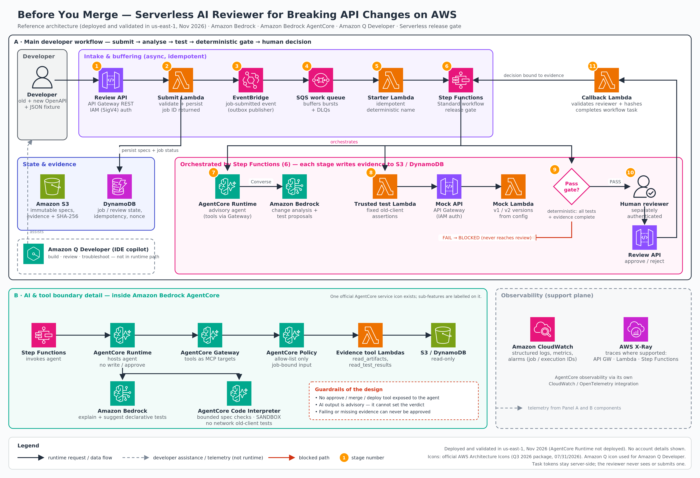
These are the boundaries the code enforces, and they are the reason the pipeline looks the way it does.
read_artifacts, request_spec_check, read_test_results). There is no permit for approve, merge or deploy.SANDBOX interpreter can still reach some AWS services, so I do not call it an air gap.AWS_IAM). Two REST APIs. The review API exposes POST /jobs, GET /jobs/{jobId}, GET /jobs/{jobId}/report, GET /jobs/{jobId}/review-context and POST /reviews. A second, mock API serves GET /orders-v1/orders, GET /orders-v2-broken/orders and GET /orders-v2-corrected/orders. No method is unauthenticated, including the mock routes.cloud/statemachine.asl.json.ReviewBus, deployed under the name api-review) and a rule, api-review-submitted, that matches JobSubmitted from api.review and targets the work queue. The rule has its own delivery dead-letter queue.api-review-jobs) with job, idempotency and outbox records, and a stream that feeds the publisher.SANDBOX). The Runtime is part of the design, not part of the validated result.TracingConfig set to Active, and the AWS OpenTelemetry layer, configured to export spans to the X-Ray OTLP endpoint (Section 12). The code does not import the maintenance-mode aws-xray-sdk. With the trace segment destination set to CloudWatch Logs, spans are stored in CloudWatch Transaction Search.ApiReviewDeveloper, ApiReviewReviewer) and a scripted operator user, plus per-function execution roles and two AgentCore service roles.us-east-1.requires-python >= 3.11). The local run in this guide used Python 3.13.5 and pytest 9.2.arn:aws:lambda:us-east-1:615299751070:layer:AWSOpenTelemetryDistroPython:33. The 12-digit number inside that ARN is the layer publisher's account, not mine. Look the ARN up again for your region and architecture before you deploy.pytest for the tests: pip install pytest.Every script that creates or deletes resources refuses to run unless you set an explicit confirmation variable, so a stray paste cannot create anything:
CONFIRM_DEPLOY=yes for scripts/deploy_cloudshell.shCONFIRM_IDENTITIES=yes for scripts/setup_demo_identities.shCONFIRM_AGENTCORE=yes for scripts/enable_agentcore.shCONFIRM_VALIDATE=yes for scripts/validate_agentcore.shCONFIRM_CLEANUP=yes for scripts/cleanup_cloudshell.shIn CloudShell:
rm -rf ~/api-review && git clone https://github.com/Ajayuppu/before-you-merge-api-release-gate ~/api-review && cd ~/api-review && git log --oneline -n 3 && ls
pip install pytest
cd ~/api-review && python3 -m pytest -q 2>&1 | tail -n 15
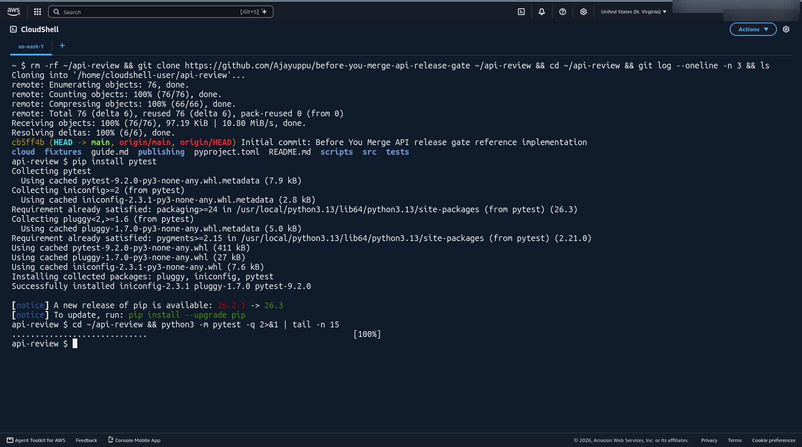
us-east-1 right after cloning the repository into ~/api-review. The log shows the checkout at the initial commit (cb5ff4b), the file listing (cloud, fixtures, guide.md, publishing, pyproject.toml, README.md, scripts, src, tests), pytest installing, and the suite finishing at 100% with only passing dots. This was the first checkout, before the later fixes in this guide, so it is the original suite, not the final 72 (see the next figure). The account menu in the top-right corner is blurred.The final repository (commit 37567ae) has 72 tests. I re-ran them locally for this guide (Python 3.13.5, pytest 9.2) and got 72 passed in 1.64s. In CloudShell, in a virtual environment with pytest installed, the suite at commit 9e702c8 ("Empty versioned buckets on cleanup and record the live validation") printed 72 passed in 0.91s:
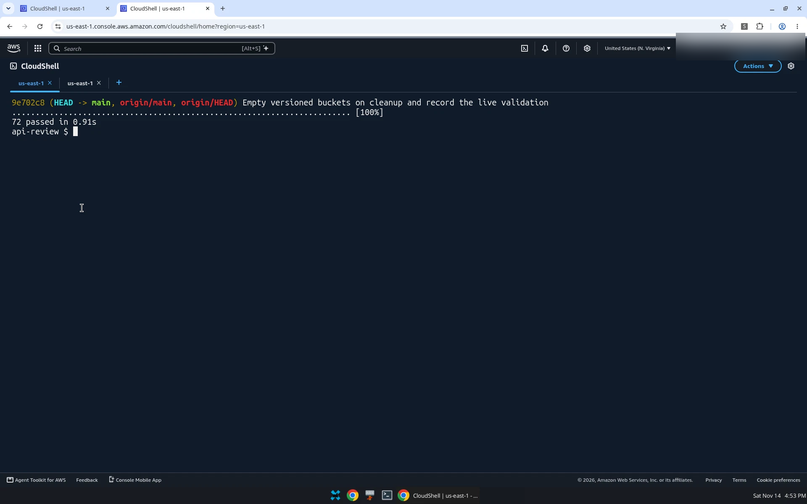
us-east-1 with the one-line git log entry for commit 9e702c8 (HEAD -> main, origin/main, origin/HEAD, "Empty versioned buckets on cleanup and record the live validation"), a progress line of dots ending at 100%, and 72 passed in 0.91s. It proves the final suite passes in the same environment I deployed from, as opposed to the earlier checkout in the previous figure. The account menu is blurred.Per file, the 72 tests break down as: test_local_reference.py 26, test_agentcore_setup.py 13, test_runtime_clients.py 11, test_advisory_parse.py 4, test_aws_demo_cli.py 4, test_cleanup_versions.py 4, test_advisory_report.py 3, test_cloud_handlers.py 2, test_compare_bedrock_models.py 2, test_dynamo_numbers.py 2 and test_template.py 1.
These tests call no AWS API. They cover the diff rules (including the request-versus-response direction), the harness, evidence sealing, idempotency, a crash after StartExecution, a crash before and after the review callback, the two DLQs being distinct, the policy mirror that denies authority and cross-job arguments, the Bedrock parser and report shaping, the AgentCore helper logic, the versioned-bucket cleanup helpers, and the CloudFormation template contract (including the tracing variables). They are evidence about the logic. The live steps below are what show it working in AWS.
You can also run the local demo, which walks three orders journeys in memory:
bash scripts/run_local_tests.sh
bash scripts/run_local_demo.sh
The demo output from my run (the local identity is an explicit simulation, never production auth, and the banner says so):
apireview 1.0.0 local demo
SIMULATION: this process is not production authentication and is not AWS IAM. Identity is taken from an explicit local principal, never from a reviewer field in the request body.
== healthy ==
status: WAITING_REVIEW
verdict: PASS
harnessPassed: True
breakingFindingCount: 0
checker.authoritative: False
checker.ok: True
checker.mode: in-process
advisory.includedInVerdict: False
review: APPROVED
== broken ==
status: BLOCKED
verdict: BLOCKED
harnessPassed: False
breakingFindingCount: 2
breaking response.property.removed.required: Removed response property next_cursor. It was required, so old clients that read it will break.
breaking response.type.changed: Response type changed from number to string. Old clients that decode the previous JSON type will break.
assertion failed amount: amount is str '19.95'; old clients require a JSON number and booleans are rejected
assertion failed next_cursor: next_cursor is missing; old clients require the field
checker.authoritative: False
checker.ok: False
checker.mode: in-process
advisory.includedInVerdict: False
review rejected: fail_closed: job is not waiting for review (BLOCKED)
== corrected ==
status: WAITING_REVIEW
verdict: PASS
harnessPassed: True
breakingFindingCount: 0
checker.authoritative: False
checker.ok: True
checker.mode: in-process
advisory.includedInVerdict: False
review: APPROVED
executions started: 3
(The demo also prints an evidence hash per scenario; those change on every run because each job gets a random id, so I left them out.) This is the same story the cloud run tells later: healthy passes, broken is blocked and cannot be approved, corrected passes and can be approved once.
The repository ships three OpenAPI 3.0 documents under fixtures/, one declarative client fixture, and one mock response body per version. The fixture describes what an old client sends and expects. It is JSON and nothing else:
{
"fixtureVersion": "1",
"name": "orders-old-client",
"cases": [
{
"id": "list-orders",
"method": "GET",
"path": "/orders",
"query": {},
"expect": {
"status": 200,
"body": {
"orders": [ { "id": "ord-1", "amount": 19.95 } ],
"next_cursor": null
},
"requiredPaths": ["orders", "orders[0].id", "orders[0].amount", "next_cursor"]
}
}
]
}
The only difference between orders-v1.openapi.json and the broken candidate is three edits: info.version goes 1.0.0 → 2.0.0, amount.type goes number → string, and next_cursor is removed from both required and properties. The corrected candidate differs from v1 by only info.version (1.0.0 → 1.1.0) and one added optional currency string. The mock API returns, for the broken version, a body with "amount": "19.95" and no next_cursor; for the corrected version, a numeric 19.95, next_cursor: null, and currency: "USD".
The fixture is validated before use. Keys such as code, script, url, callback, principal, reviewer, role and taskToken are forbidden, and strings that look like http://, https://, s3:// or file:// are rejected (limits.py). Specs are limited to a documented OpenAPI 3.0 subset with local #/components/schemas references; external references are refused. JSON booleans are not treated as numbers (Python's bool is a subclass of int, and the code handles that), and money values are parsed as Decimal, so 19.95 never passes through binary floating point.
The diff is the first of the two components that can set a verdict. The central idea is that compatibility has a direction. Removing a required response property breaks old clients. Adding a required request property breaks callers. Adding an optional response property breaks no one. The code keeps those rules separate:
def _diff_object(old: Schema, new: Schema, path: str, direction: str, findings: list[dict[str, str]]) -> None:
for name in sorted(set(old.properties) - set(new.properties)):
required = name in old.required
if direction == "response":
rule = "response.property.removed.required" if required else "response.property.removed.optional"
_add(
findings,
severity="breaking",
rule=rule,
path=f"{path}/properties/{name}",
message=(
f"Removed response property {name}. "
+ (
"It was required, so old clients that read it will break."
if required
else "It was optional, and old clients that read it can still break."
)
),
)
else:
_add(findings, severity="info", rule="request.property.removed",
path=f"{path}/properties/{name}",
message=f"Removed request property {name}. The server accepts a smaller caller payload.")
for name in sorted(set(new.properties) - set(old.properties)):
required = name in new.required
if direction == "response":
rule = "response.property.added.required" if required else "response.property.added.optional"
... # severity "info": old clients ignore a new response field
elif required:
_add(findings, severity="breaking", rule="request.property.added.required", ...)
A type change on a response schema produces response.type.changed with severity breaking. The test test_request_and_response_required_directions_differ locks the direction rules in.
The second verdict-setting component is the old-client harness. It runs fixed assertions that live in the repository. The fixture only supplies expected values; it is never executed. The cloud transport can call only the configured mock host and an allow-listed route for the selected version enum, with redirects disabled, a 3-second timeout and a 64 KiB response cap:
def build_plan(mock_version: str, *, host: str, stage: str) -> HarnessPlan:
if mock_version not in MOCK_VERSIONS:
raise ValidationFailed("mockVersion is not on the allowlist")
if not host or "://" in host or "/" in host or " " in host:
raise ValidationFailed("mock host must be a configured hostname, not a URL")
...
path = CLOUD_MOCK_ROUTES[mock_version]
url = f"https://{host}/{stage}{path}"
parts = urlsplit(url)
if parts.scheme != "https" or parts.hostname != host or parts.query or parts.fragment:
raise ValidationFailed("mock URL failed the allowlist check")
...
return HarnessPlan(mock_version=mock_version, target=MockTarget(..., allow_redirects=False))
The two assertions that matter for our example are amount and next_cursor:
amount = order.get("amount")
if isinstance(amount, bool) or not is_json_number(amount):
kind = type(amount).__name__
assertions.append(_assertion("amount", False,
f"amount is {kind} {amount!r}; old clients require a JSON number and booleans are rejected"))
...
present = "next_cursor" in body
if not present:
assertions.append(_assertion("next_cursor", False,
"next_cursor is missing; old clients require the field"))
A truncated or incomplete harness result also fails closed: complete must be true, there must be at least one case, and every case must pass.
After the harness runs, the Seal step builds an evidence bundle and hashes the canonical bytes of the whole thing: job id, both spec hashes, fixture hash, mock version, findings, harness result, checker summary, the advisory hashes, the agent trace and the verdict. Change any byte afterwards and the hash no longer matches.
The verdict function is short enough to read in one screen, and the thing to notice is what is not a parameter:
def authoritative_verdict(findings: list[dict[str, Any]], harness: dict[str, Any] | None) -> str:
"""AI output is intentionally not a parameter."""
if not harness or not harness.get("complete") or not harness.get("passed"):
return "BLOCKED"
if not harness.get("cases"):
return "BLOCKED"
if breaking_findings(findings):
return "BLOCKED"
return "PASS"
No model text, no checker result and no agent output can reach this function. The test test_model_output_cannot_change_the_verdict checks exactly that.
The state machine is a Step Functions Standard workflow. Each step retries transient Lambda errors with backoff and catches everything else into FailClosed. The part that implements the hard gate is small:
"Gate": {
"Type": "Choice",
"Choices": [ { "Variable": "$.verdict", "StringEquals": "PASS", "Next": "WaitForReview" } ],
"Default": "MarkBlocked"
},
"MarkBlocked": { "Type": "Succeed" },
"WaitForReview": {
"Type": "Task",
"Resource": "arn:aws:states:::lambda:invoke.waitForTaskToken",
"TimeoutSeconds": 3600,
"Parameters": {
"FunctionName": "${RegisterWaitFunctionArn}",
"Payload": {
"evidenceHash.$": "$.evidenceHash",
"jobId.$": "$.jobId",
"taskToken.$": "$$.Task.Token"
}
},
"ResultPath": "$.review",
"Catch": [
{ "ErrorEquals": ["States.Timeout"], "ResultPath": "$.error", "Next": "Expire" },
{ "ErrorEquals": ["States.ALL"], "ResultPath": "$.error", "Next": "FailClosed" }
],
"Next": "Finalize"
}
MarkBlocked is a Succeed state on purpose: recording a block is a completed workflow, not an approval. Anything that is not exactly PASS takes the default branch. The task token is handed to a Lambda that stores it server-side; it is never returned to a caller. After the reviewer's callback, Finalize re-checks the evidence and only then writes APPROVED.
The submit Lambda makes one DynamoDB transaction that writes the job, an idempotency record keyed by caller and Idempotency-Key, and an outbox record. This closes the gap between "wrote the job" and "published the event":
table.put_new(
[
(_job_pk(job_id), job),
(_idem_pk(principal.subject, idempotency_key),
{"jobId": job_id, "payloadHash": loaded.payload_hash, "status": "IDEMPOTENCY", "subject": principal.subject}),
(_outbox_pk(event_id), {"eventId": event_id, "jobId": job_id, "status": "PENDING"}),
]
)
Submitting the same key with the same payload returns the same job; the same key with a different payload returns a conflict. The caller identity comes from requestContext.identity.userArn, set by API Gateway's IAM authorization, and a body that tries to carry authority fields is rejected.
The EventBridge rule and queue wiring in the generated template:
"SubmitRule": {
"Type": "AWS::Events::Rule",
"Properties": {
"EventBusName": { "Ref": "ReviewBus" },
"EventPattern": { "detail-type": ["JobSubmitted"], "source": ["api.review"] },
"Targets": [ { "Arn": { "Fn::GetAtt": ["WorkQueue", "Arn"] },
"DeadLetterConfig": { "Arn": { "Fn::GetAtt": ["EventBridgeDlq", "Arn"] } },
"Id": "WorkQueue" } ]
}
},
"WorkQueue": {
"Type": "AWS::SQS::Queue",
"Properties": {
"RedrivePolicy": { "deadLetterTargetArn": { "Fn::GetAtt": ["WorkerDlq", "Arn"] }, "maxReceiveCount": 5 },
"VisibilityTimeout": 182
}
}
The visibility timeout, 182 seconds, is 6 × 30 + 2: six times the dispatcher's 30-second timeout plus its 2-second batch window, which is the documented rule for SQS-triggered Lambda. A test (test_visibility_timeout_matches_the_documented_formula) keeps the numbers in step. The EventBridge delivery DLQ and the worker redrive DLQ are different queues on purpose: one covers failed delivery into SQS, the other covers repeated failures in the dispatcher. EventBridge does not start the workflow; only the dispatcher does, after a conditional claim and with a deterministic execution name (review-<jobId>), so a replayed event cannot start a second logical run.
This is the deploy command I used in CloudShell. The first attempt (below) piped to tee ~/deploy.log; for later redeploys I redirected to a numbered log, > ~/deployN.log 2>&1, so I could grep it afterwards:
cd ~/api-review && CONFIRM_DEPLOY=yes REGION=us-east-1 \
OTEL_LAYER_ARN='arn:aws:lambda:us-east-1:615299751070:layer:AWSOpenTelemetryDistroPython:33' \
bash scripts/deploy_cloudshell.sh 2>&1 | tee ~/deploy.log
The script packages the Lambda code (build/lambda.zip, 37 entries), regenerates cloud/template.deploy.json, creates a code bucket named api-review-code-<ACCOUNT_ID>-us-east-1 if it is missing, uploads the zip under a content-addressed key, and runs aws cloudformation deploy with CAPABILITY_IAM and --s3-bucket:
CODE_KEY="api-review/lambda-$(sha256sum "$ROOT/build/lambda.zip" | cut -c1-16).zip"
...
aws cloudformation deploy \
--region "$REGION" --stack-name "$STACK" \
--template-file "$ROOT/cloud/template.deploy.json" \
--capabilities CAPABILITY_IAM --s3-bucket "${BUCKET}" --s3-prefix api-review/templates \
--parameter-overrides \
"LambdaCodeBucket=${BUCKET}" "LambdaCodeKey=${CODE_KEY}" "OtelLayerArn=${OTEL_LAYER_ARN}" \
"ProjectName=${PROJECT_NAME:-api-review}" \
"BedrockAdvisory=${BEDROCK_ADVISORY:-disabled}" \
"BedrockModelId=${BEDROCK_MODEL_ID:-us.amazon.nova-2-lite-v1:0}" \
"DeploymentNonce=${DEPLOYMENT_NONCE:-$(date +%s)}"
My first attempt failed, and that is worth showing because it is the first thing you will hit too:
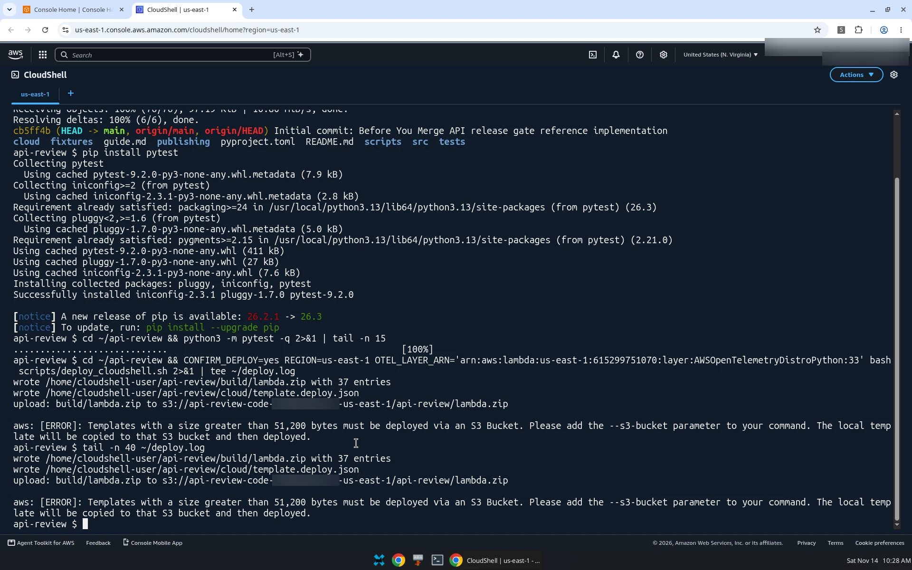
build/lambda.zip (37 entries), wrote cloud/template.deploy.json, uploaded the zip to the code bucket (the bucket suffix after api-review-code- is blurred), and then aws cloudformation deploy stopped with: "Templates with a size greater than 51,200 bytes must be deployed via an S3 Bucket. Please add the --s3-bucket parameter to your command." The command line above it shows the CONFIRM_DEPLOY=yes guard and the layer ARN. This is a real failure, not a staged one, and the account menu is blurred.The fix (commit 955fb9e) is the --s3-bucket / --s3-prefix pair you see in the script above; the template upload in the successful run is 94,421 bytes.
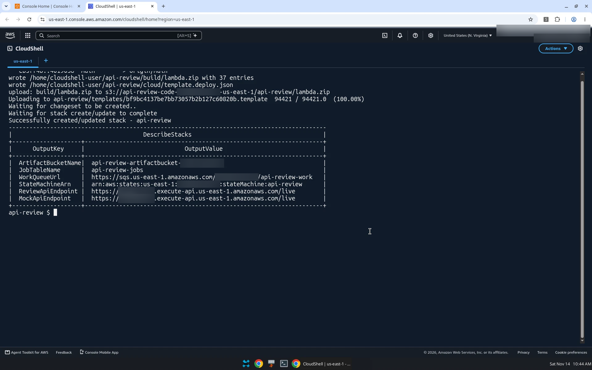
api-review/templates/... (94421 / 94421.0, 100.00%), "Waiting for changeset to be created", "Waiting for stack create/update to complete" and "Successfully created/updated stack - api-review". The DescribeStacks table lists the six outputs: ArtifactBucketName, JobTableName (api-review-jobs), WorkQueueUrl, StateMachineArn, ReviewApiEndpoint and MockApiEndpoint; the two API endpoints end in the live stage. Account IDs, the artifact bucket suffix and both API IDs are blurred.I redeployed several times while fixing the issues in the troubleshooting section (deploy logs deploy7, deploy8 and deploy9 all ended with Successfully created/updated stack). The check I used each time was:
grep 'Successfully created/updated stack' ~/deployN.log
CloudShell runs as the account root user, and the API's IAM-based caller check rejects root: POST /jobs answered authorization_failed with "unsupported caller ARN shape" (see the troubleshooting section). So the repo includes a script that creates an operator IAM user and two roles, and writes CLI profiles for them:
CONFIRM_IDENTITIES=yes REGION=us-east-1 bash scripts/setup_demo_identities.sh
The roles are the whole point of role separation. The developer role may call POST /jobs and GET /jobs/*, and has an explicit deny on the two reviewer routes. The reviewer role may call only the reviewer routes:
developer = {
"Version": "2012-10-17",
"Statement": [
{"Effect": "Allow", "Action": "execute-api:Invoke",
"Resource": [f"{base}/live/POST/jobs", f"{base}/live/GET/jobs/*"]},
{"Effect": "Deny", "Action": "execute-api:Invoke",
"Resource": [f"{base}/live/GET/jobs/*/review-context", f"{base}/live/POST/reviews"]},
],
}
reviewer = {
"Version": "2012-10-17",
"Statement": [
{"Effect": "Allow", "Action": "execute-api:Invoke",
"Resource": [f"{base}/live/GET/jobs/*/review-context", f"{base}/live/POST/reviews"]},
],
}
The operator user can do exactly one thing: sts:AssumeRole on those two roles. The script writes three CLI profiles: api-review-operator, api-review-developer (session name dev-ada) and api-review-reviewer (session name rev-ben). Those session names show up in the ARNs in the screenshots below.
On the Lambda side, the caller identity is read from the API Gateway request context only:
context = event.get("requestContext")
...
user_arn = identity.get("userArn")
...
role_name = _role_name(user_arn)
if not _role_allowed(role_name, expected_role_name):
raise AuthorizationFailed("caller IAM role is not allowed for this method")
and the review handler additionally refuses a reviewer who is the job's owner (submitter cannot review their own job).
Submit the old document, the broken candidate and the fixture as the developer. The client script signs the request with SigV4 using the developer profile and saves the returned job id to ~/.api-review-last-job:
python3 scripts/aws_demo.py --region us-east-1 --profile api-review-developer submit \
--old fixtures/orders-v1.openapi.json \
--new fixtures/orders-v2-broken.openapi.json \
--fixture fixtures/orders-client.fixture.json \
--mock-version orders-v2-broken \
--idempotency-key cloud-broken-0003
python3 scripts/aws_demo.py --region us-east-1 --profile api-review-developer status --job-id last
python3 scripts/aws_demo.py --region us-east-1 --profile api-review-developer report --job-id last
The idempotency key I used for the job below was cloud-broken-0003. You will see the line profile cannot read stack outputs; the lookup used ambient credentials in several screenshots. That is the script working as designed: it looks up the API endpoint from the stack outputs, the developer and reviewer roles deliberately cannot read CloudFormation, so that one lookup falls back to the ambient CloudShell credentials, while the request itself is still signed with the profile.
Result (job job_d91438ad6d97f70467bd): status BLOCKED, verdict BLOCKED, evidence hash 2ed375106473bd023752e7147bc01bb1d03a1ada2c9208188f5e6fada07ee75e, with these findings:
060d1de06bb5e2b6, info.version.changed, severity info, /info/version: 1.0.0 → 2.0.0.83ff6f7d10e433e2, response.property.removed.required, severity breaking, GET /orders, property next_cursor: "Removed response property next_cursor. It was required, so old clients that read it will break."19f9694cfa9fe6d7, response.type.changed, severity breaking, GET /orders, orders[].amount: number → string: "Old clients that decode the previous JSON type will break."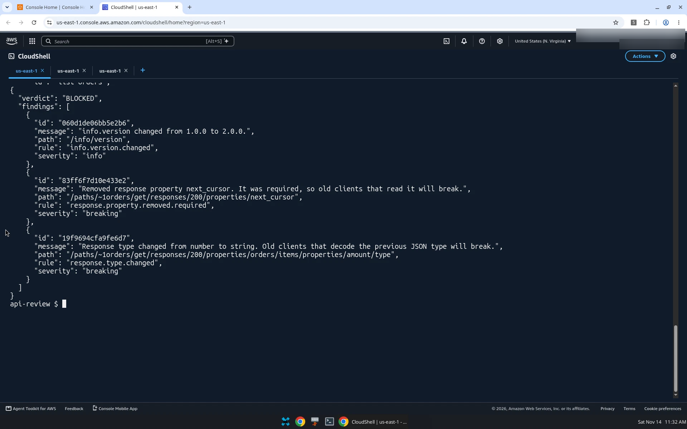
"verdict": "BLOCKED" and three findings with their ids, rules and JSON-pointer paths: the informational version bump, the removed required next_cursor, and the amount type change from number to string, both marked breaking. This proves the deterministic diff catches both breaks in AWS and that the job is blocked. The account menu at the top is blurred; the job's owner ARN is not in view.A blocked job never enters the human-review wait, so there is nothing for a reviewer to approve. I tested that directly in Step 13.
Same command shape, with the corrected document, the matching mock version and a new key (cloud-corrected-0001):
python3 scripts/aws_demo.py --region us-east-1 --profile api-review-developer submit \
--old fixtures/orders-v1.openapi.json \
--new fixtures/orders-v2-corrected.openapi.json \
--fixture fixtures/orders-client.fixture.json \
--mock-version orders-v2-corrected \
--idempotency-key cloud-corrected-0001
Result (job job_834a7b9a23c87ce25a83): status WAITING_REVIEW, verdict PASS, evidence hash c9075e51704fa7889e906dc0539ed2f588822f47a455417fe39368d74acbe551. Its findings are the benign info.version.changed (1.0.0 → 1.1.0) and 875b695fc116389a, response.property.added.optional for currency: "An optional additive response field is compatible with old clients."
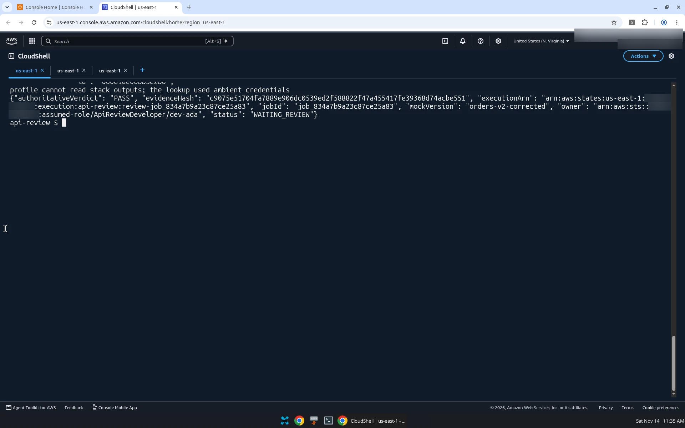
"authoritativeVerdict": "PASS", the evidence hash starting c9075e51…, "mockVersion": "orders-v2-corrected", "status": "WAITING_REVIEW", and an execution ARN named review-job_834a7b9a23c87ce25a83. The owner is …assumed-role/ApiReviewDeveloper/dev-ada. This shows a passing job stops at the human gate instead of auto-approving. The account ID inside the execution and owner ARNs is blurred.The reviewer, under the reviewer profile, fetches the review context. This is the only call that returns the one-time nonce and expiry, and the submitter cannot see it. I saved the response to a file (note the clear; prefix I used on every CloudShell command, explained in troubleshooting):
clear; python3 scripts/aws_demo.py --region us-east-1 --profile api-review-reviewer \
review-context --job-id job_834a7b9a23c87ce25a83 | tee ~/review-context.json
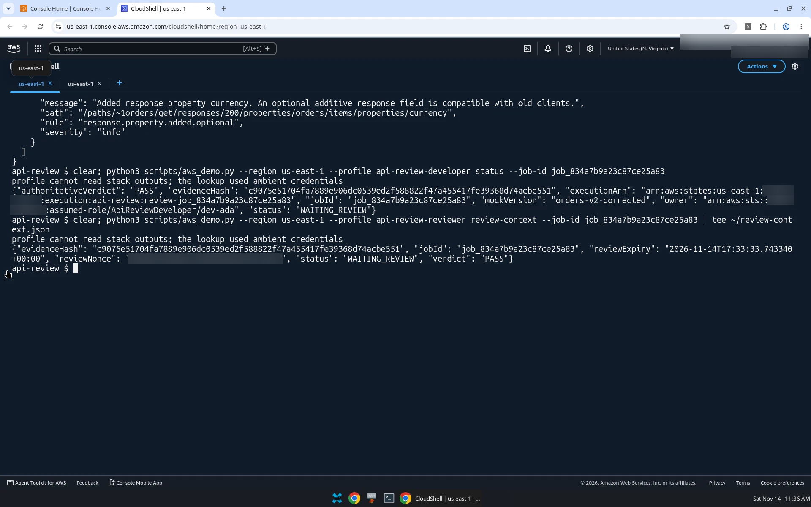
status as api-review-developer returns the WAITING_REVIEW job owned by …assumed-role/ApiReviewDeveloper/dev-ada, then review-context as api-review-reviewer, saved with tee ~/review-context.json, returns the evidence hash, "status": "WAITING_REVIEW", "verdict": "PASS" and a reviewExpiry of 2026-11-14T17:33:33.743340+00:00 (12:33 PM ET). It proves the nonce is only handed to the reviewer role, bound to this job and this evidence. The reviewNonce and the account ID are blurred; the last finding of the report (the optional currency field) is visible above.The approval call binds the decision to the job, the exact evidence hash and the nonce:
python3 scripts/aws_demo.py --region us-east-1 --profile api-review-reviewer review \
--job-id job_834a7b9a23c87ce25a83 \
--evidence-hash "$EVIDENCE_HASH" \
--nonce "$NONCE" \
--decision approve \
--comment "sealed evidence matches"
EVIDENCE_HASH and NONCE come from the saved review-context file. The server-side review handler does the following, in order:
principal = principal_from_api_gateway(event, expected_role_name=REVIEWER_ROLE_NAME, ...)
...
if principal.subject == job["owner"]:
raise AuthorizationFailed("submitter cannot review their own job")
...
if job["status"] not in {"WAITING_REVIEW", "REVIEW_CALLBACK_PENDING"}:
raise FailClosed(f"job is not waiting for review ({job['status']})")
if job.get("evidenceHash") != body.get("evidenceHash"):
raise FailClosed("evidence hash does not match the sealed bundle")
if job.get("reviewNonce") != body.get("nonce"):
raise FailClosed("review nonce does not match this job")
_recheck(job, blobs) # rebuilds the seal from stored bytes and compares hashes
...
job = table.update(_job_pk(job["jobId"]),
equals={"status": "WAITING_REVIEW", "evidenceHash": job["evidenceHash"], "reviewNonce": job["reviewNonce"]},
changes={"decision": decision, "reviewer": principal.subject, "status": "REVIEW_CALLBACK_PENDING", ...})
sfn.send_task_success(taskToken=job["taskToken"], output=canonical_dumps(output))
The conditional update is the one-time transition. Finalize then checks again that the callback payload still matches the job and the seal before writing APPROVED.
Observed result: the approve call returned {"callback":"sent","status":"REVIEW_CALLBACK_PENDING"}, and the final job status became APPROVED with verdict PASS. The 202 response is deliberately not "approved": the status stays REVIEW_CALLBACK_PENDING until Finalize has re-verified the evidence.
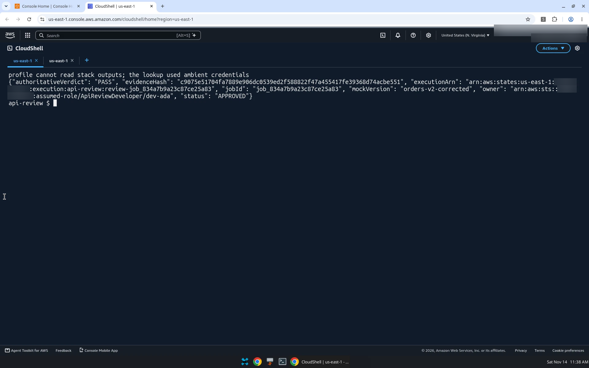
"authoritativeVerdict": "PASS", the same evidence hash (c9075e51…), the same execution ARN and "status": "APPROVED". This shows approval landed only after the workflow finished, bound to the exact evidence that was sealed. Account IDs in the ARNs are blurred.Replay. Sending the same approval a second time must not approve anything again:
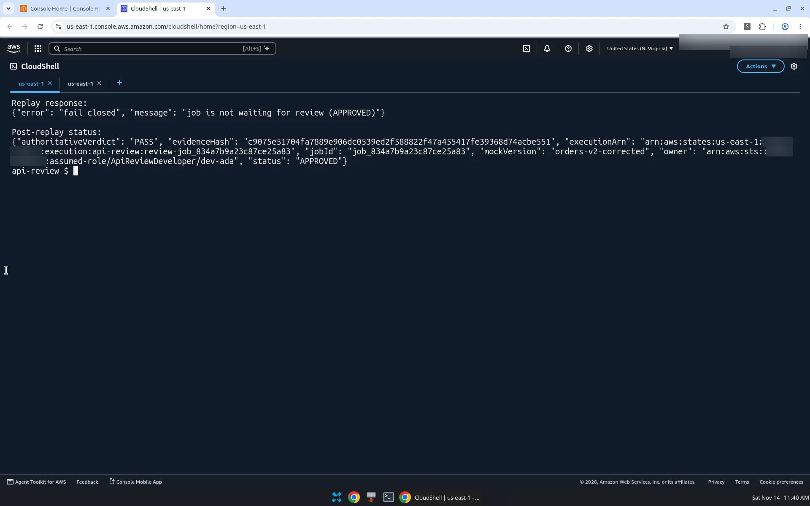
{"error": "fail_closed", "message": "job is not waiting for review (APPROVED)"}. The "Post-replay status" below it still reads "status": "APPROVED" with the unchanged evidence hash and the same execution, so nothing was approved twice and nothing moved. The account ID inside the ARNs is blurred.A blocked job cannot be approved. I called both reviewer endpoints for the broken job:
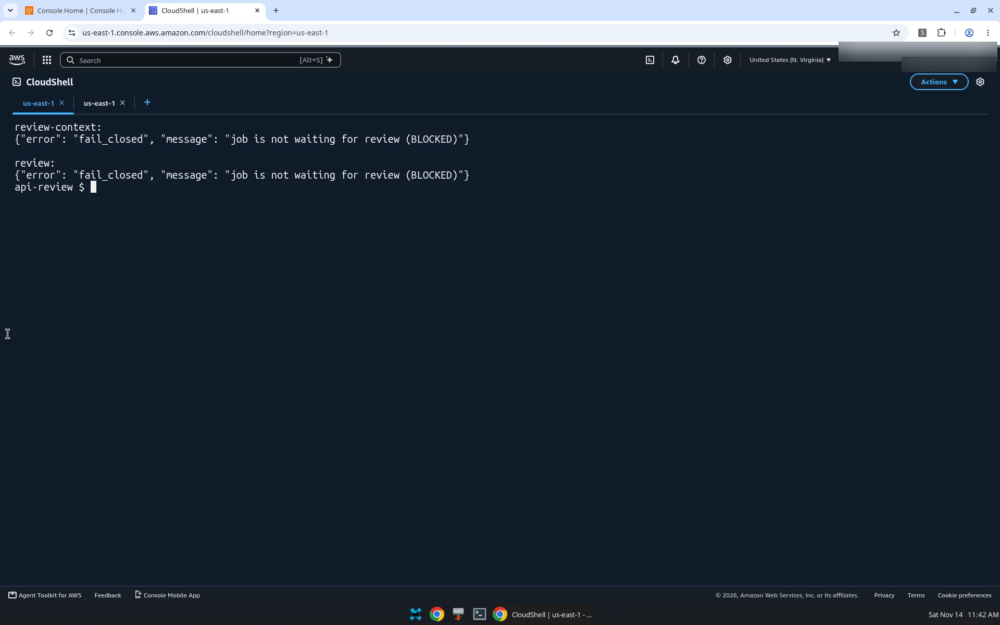
review-context and review answer {"error": "fail_closed", "message": "job is not waiting for review (BLOCKED)"}. A failing result has no review step to approve, which is the central promise of the gate. No account details are visible in this view.The developer cannot use the reviewer route. The developer role has an explicit deny, and the call fails at API Gateway before any Lambda runs:
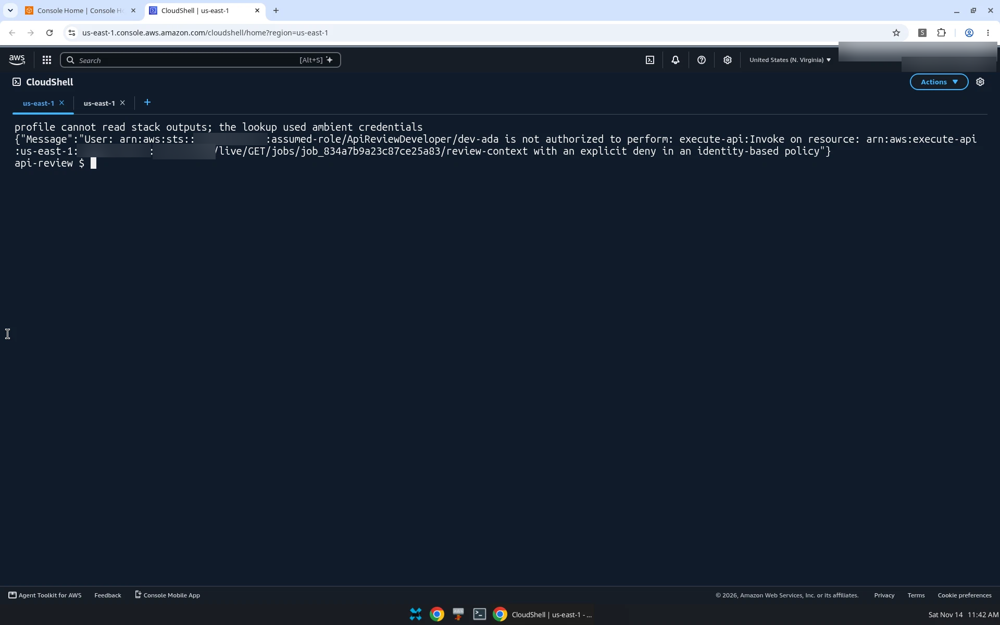
review-context as …assumed-role/ApiReviewDeveloper/dev-ada returns API Gateway's message that the user "is not authorized to perform: execute-api:Invoke on resource: …/live/GET/jobs/job_834a7b9a23c87ce25a83/review-context with an explicit deny in an identity-based policy". That is the identity policy from Step 9 doing its job, not application code. The account ID and API ID in the message are blurred.At the end of these checks, Step Functions showed both executions as SUCCEEDED (the broken one ended in MarkBlocked, the corrected one in the approval path). A list-rules query on the default event bus for rules matching api-review returned none, which is consistent with the rule living on the custom ReviewBus in the template; I did not capture a list-rules for that bus, so I am not presenting it as evidence. What I can say is that the jobs moved from RECEIVED to terminal states, which requires the outbox, publisher, EventBridge, SQS, dispatcher and Step Functions path to have worked.
The local tests cover the cases I did not repeat live: wrong role and submitter-as-reviewer (test_submitter_and_wrong_role_cannot_review), a stale hash, a cross-job nonce and an expired review (test_stale_hash_cross_job_nonce_and_expiry), tampered findings (test_tampered_findings_fail_closed), same key with the same or a different payload (test_idempotency_same_payload_and_conflict), duplicate events starting one execution, a crash after StartExecution, a crash before and after the review callback, and the two DLQs being separate. Those are tested locally, not re-run in AWS.
The Analyze step always produces a deterministic advisory (plain explanations and declarative proposals built from the findings by repository code). When the stack parameter BedrockAdvisory is enabled, the same step also calls the Amazon Bedrock Converse API with the breaking findings and asks a model to explain them and propose fixes. The reply is parsed strictly, stored beside the deterministic advisory, and shown on the job report.
The request the analyze function builds:
def build_converse_request(model_id: str, findings: list[dict[str, str]]) -> dict[str, Any]:
"""Bedrock Converse request. Reasoning stays off so maxTokens remains valid."""
prompt = canonical_dumps({
"task": "explain-breaking-changes",
"findings": [item for item in findings if item["severity"] == "breaking"],
})
return {
"modelId": model_id,
"system": [{"text": _SYSTEM}],
"messages": [{"role": "user", "content": [{"text": prompt}]}],
"inferenceConfig": {"maxTokens": 1024, "temperature": 0.0},
"outputConfig": {"textFormat": {"type": "json_schema", "structure": {"jsonSchema": {
"name": "advisory",
"description": "Explanations and proposals. Not a verdict.",
"schema": _ADVISORY_SCHEMA}}}},
}
The system prompt tells the model to return one JSON object with two arrays, explanations (objects with a string explanation) and proposals (objects with a string description), and to leave out any verdict, approve, decision, principal, job id or code. Models that reject the structured-output field get the request again without it, and models that reject a system prompt get it folded into the user message (_send_converse). A transport or service error does not fail the job: it becomes a recorded modelStatus: error with the reason, and the deterministic advisory stays.
Four independent reasons, each one visible in code or output:
authoritative_verdict(findings, harness) (Step 5) only sees findings and the harness result.advisory block contains "authoritative": False and "includedInVerdict": False, plus only the hashes of the deterministic and model advisories.code, script, command, verdict, approve, decision, principal or jobid, and any string containing http://, https:// or s3://, causes the whole reply to be rejected:def _safe_tree(value: Any) -> bool:
if isinstance(value, dict):
for key, child in value.items():
if not isinstance(key, str):
return False
lowered = key.lower()
if lowered in {"code", "script", "command", "verdict", "approve", "decision", "principal", "jobid"}:
return False
if not _safe_tree(child):
return False
return True
...
test_model_output_cannot_change_the_verdict, test_forbidden_content_is_rejected_and_error_matches_rejection and test_rejected_model_report_keeps_the_reason_and_the_block all run in the suite.A suggestion from a model also never becomes executable: proposals are descriptions of a change to an OpenAPI document, not code.
I enabled the advisory by redeploying with two extra variables. This is the command I used for the end-to-end run (Anthropic Claude Haiku 4.5 through its US inference profile):
cd ~/api-review && CONFIRM_DEPLOY=yes REGION=us-east-1 \
OTEL_LAYER_ARN='arn:aws:lambda:us-east-1:615299751070:layer:AWSOpenTelemetryDistroPython:33' \
BEDROCK_ADVISORY=enabled BEDROCK_MODEL_ID='us.anthropic.claude-haiku-4-5-20251001-v1:0' \
bash scripts/deploy_cloudshell.sh > ~/deployN.log 2>&1
grep 'Successfully created/updated stack' ~/deployN.log
Then confirm the Lambda's environment without changing anything:
aws lambda get-function-configuration --function-name api-review-analyze --query Environment.Variables
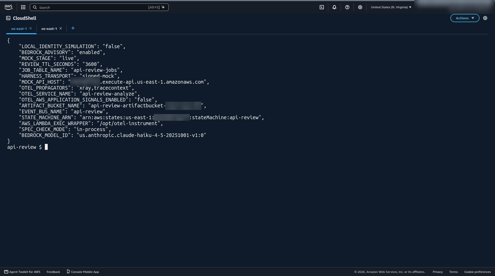
api-review-analyze after the advisory-enabled redeploy: "BEDROCK_ADVISORY": "enabled" and "BEDROCK_MODEL_ID": "us.anthropic.claude-haiku-4-5-20251001-v1:0". It also shows "SPEC_CHECK_MODE": "in-process", "LOCAL_IDENTITY_SIMULATION": "false", "MOCK_STAGE": "live", "REVIEW_TTL_SECONDS": "3600", "JOB_TABLE_NAME": "api-review-jobs", "OTEL_SERVICE_NAME": "api-review-analyze", "AWS_LAMBDA_EXEC_WRAPPER": "/opt/otel-instrument" and the OpenTelemetry propagators xray,tracecontext. The mock API host, the artifact bucket suffix and the account ID inside the state machine ARN are blurred.Note SPEC_CHECK_MODE: in-process. The deployed workflow ran the fixed checker in the Lambda, not in AgentCore Code Interpreter. I come back to that in Section 9.
The question I wanted answered was practical: which Bedrock models, including ones from other providers, actually return the JSON this step needs, and what happens when a model is not available to my account? I wrote scripts/compare_bedrock_models.py for it. It calls bedrock-runtime converse with the same request the analyze function builds, a number of times per model (default 3), and records wall-clock latency, token usage, the stop reason, whether the reply parsed, and any error. AccessDeniedException, ValidationException and ResourceNotFoundException are stored against that model instead of stopping the run. Model text is never a verdict here either.
cd ~/api-review && PYTHONPATH=src python3 scripts/compare_bedrock_models.py \
--region us-east-1 --report ~/broken-report.json --runs 3 --print-raw
The script reads the findings from a saved JSON report of the broken job (default ~/broken-report.json), and writes build/model-comparison.json plus a markdown summary. In my CloudShell the script needed PYTHONPATH=src to import the repository package. In the tables below, "ok" means the call returned without a service error, and "parse ok" means the reply was accepted by the repository's parser. Latency is the median wall-clock time per call. For a refused call, that figure is just the time to the refusal, not model speed.
1097d92, 3 runs per model)us.anthropic.claude-sonnet-4-5-20250929-v1:0: ok 0/3, median 168.764 ms, tokens n/a, parse ok 0/3.us.anthropic.claude-haiku-4-5-20251001-v1:0: ok 3/3, median 3197.794 ms, median input/output tokens 227/471, parse ok 0/3.us.meta.llama3-3-70b-instruct-v1:0: ok 0/3, median 126.378 ms, tokens n/a, parse ok 0/3.us.mistral.pixtral-large-2502-v1:0: ok 3/3, median 3139.316 ms, tokens 250/210, parse ok 2/3.us.amazon.nova-2-lite-v1:0: ok 3/3, median 1482.788 ms, tokens 238/206, parse ok 0/3.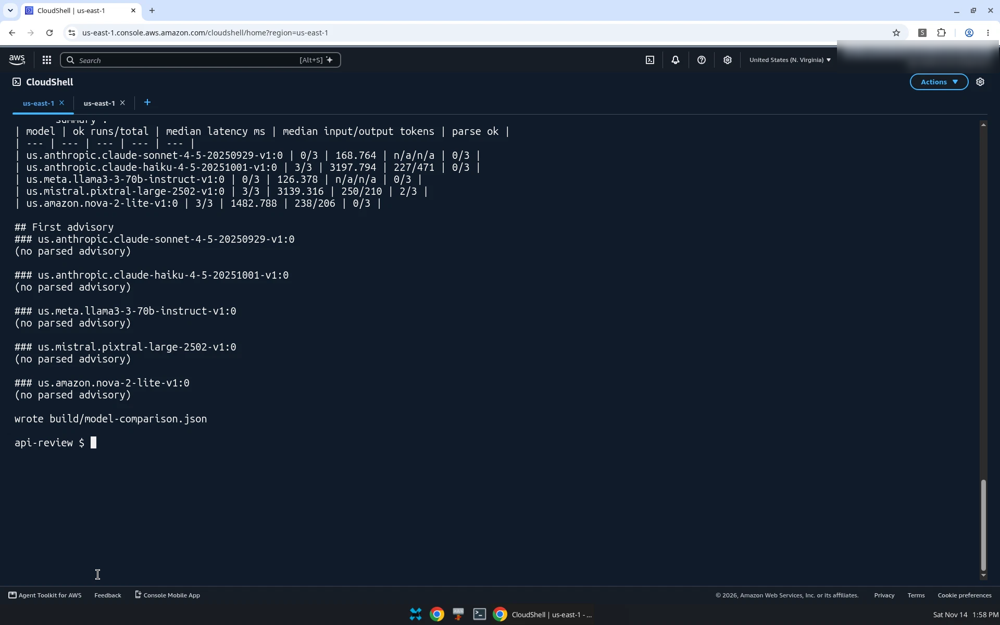
The two refusals were real, not a bug in the script. Sonnet 4.5 and Llama 3.3 70B both failed with a ResourceNotFoundException:
Access denied. This Model is marked by provider as Legacy and you have not been actively using the model in the last 30 days.
This is a Bedrock model-lifecycle rule: a model marked Legacy by its provider is refused to an account that has not used it in the last 30 days. Before building any workflow on a model, run a quick call from the account that will use it.
I also deployed the stack with Pixtral Large for the advisory (the only model with any parse success in run 1) and submitted the broken candidate. That deploy succeeded and the job (job_61a4e2ed6087607bf6eb) was BLOCKED as always, but the advisory was rejected:
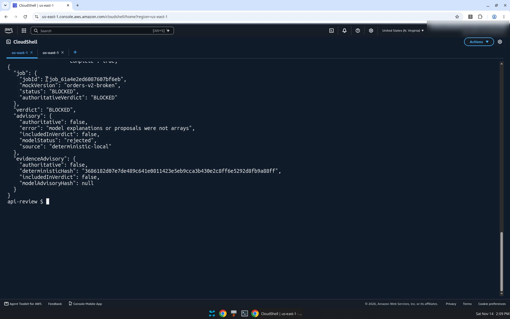
BLOCKED with authoritativeVerdict BLOCKED, and the advisory block says "authoritative": false, "includedInVerdict": false, "modelStatus": "rejected", "source": "deterministic-local" and "error": "model explanations or proposals were not arrays". The evidenceAdvisory block has a deterministicHash but "modelAdvisoryHash": null. It proves the pipeline records a rejected model reply, keeps the block, and falls back to the deterministic advisory instead of failing the job. The job id is visible; the account menu is blurred.That error pointed at the parser being too strict about the shape and wrapping of model output. I fixed the parser (commit de60ed5) so that it accepts a reply wrapped in a Markdown code fence, finds the first balanced JSON object if the model added prose, wraps a single object or string into a list, and renames a small set of known aliases (summary, fix, suggestedFix and similar) onto the two allowed fields. Unknown keys are dropped rather than failing the reply, but forbidden content inside the two arrays is still rejected:
def parse_converse_response(response: dict[str, Any]) -> dict[str, Any]:
try:
blocks = response["output"]["message"]["content"]
texts = [block["text"] for block in blocks if isinstance(block, dict) and "text" in block]
text = _strip_fences("".join(texts).strip())
parsed = _load_first_object(text)
except (KeyError, TypeError, json.JSONDecodeError, ValueError):
return _invalid("model output was not a JSON object")
...
normalized = _normalize_keys(parsed)
explanations = _as_list(normalized.get("explanations", []))
proposals = _as_list(normalized.get("proposals", []))
if not isinstance(explanations, list) or not isinstance(proposals, list):
return _invalid("model explanations or proposals were not arrays")
if not _safe_tree(explanations) or not _safe_tree(proposals):
return _invalid("model output contained forbidden content")
I also tightened the system prompt and added the structured-output field to the request in the same commit, and replaced the two Legacy comparison models with Sonnet 4.6 and Llama 4 Maverick.
de60ed5, 3 runs per model)us.anthropic.claude-sonnet-4-6: ok 0/3, median 115.354 ms, tokens n/a, parse ok 0/3.us.anthropic.claude-haiku-4-5-20251001-v1:0: ok 3/3, median 1361.927 ms, tokens 576/149, parse ok 3/3.us.meta.llama4-maverick-17b-instruct-v1:0: ok 0/3, median 146.086 ms, tokens n/a, parse ok 0/3.us.mistral.pixtral-large-2502-v1:0: ok 3/3, median 1966.831 ms, tokens 304/137, parse ok 3/3.us.amazon.nova-2-lite-v1:0: ok 3/3, median 1354.776 ms, tokens 283/197, parse ok 3/3.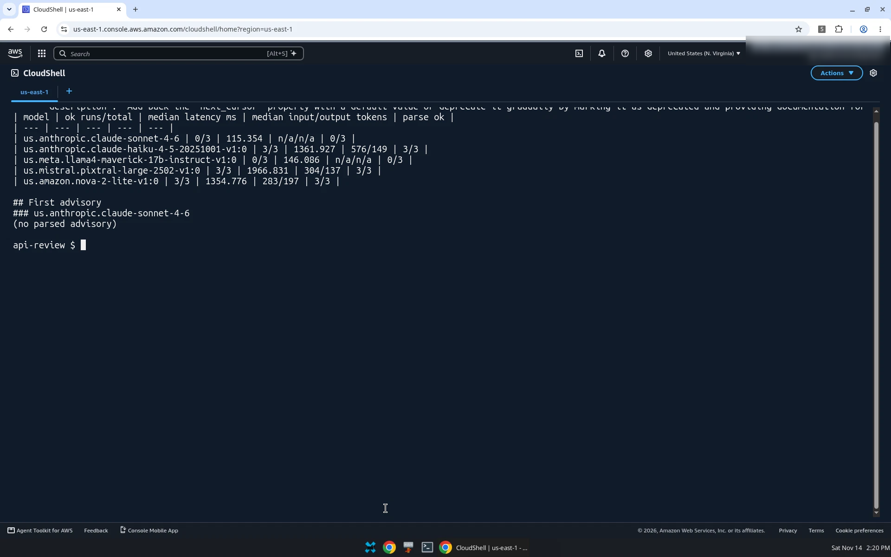
n/a tokens, and the "First advisory" section begins with Sonnet 4.6 reading "(no parsed advisory)". It proves the refusals were recorded per model instead of stopping the run. The top line is cut-off scrollback, no account details are visible, and the account menu is blurred.The refusals in run 2 were also real results, and they are worth recording as results:
Model access is denied due to INVALID_PAYMENT_INSTRUMENT: A valid payment instrument must be provided.. Your AWS Marketplace subscription for this model cannot be completed at this time. That is an account-level setup refusal for that model on my account, not a model-quality outcome.With --print-raw, the script also prints each model's reply. This is what the three models that answered said about the broken candidate (transcribed from the output):
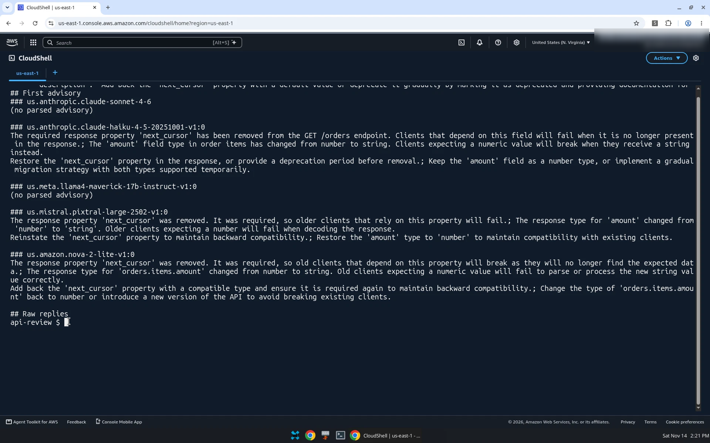
next_cursor and the amount change from number to string) in their own wording and propose restoring them, while Sonnet 4.6 and Llama 4 Maverick show "(no parsed advisory)". It proves the working models understood the findings, even though the verdict never depends on them. The last line, "## Raw replies", introduces the raw output; the account menu is blurred.next_cursor had been removed from GET /orders and clients depending on it fail, and that amount changed from number to string and numeric clients break. Proposals: restore next_cursor or provide a deprecation period before removal; keep amount a number or run a gradual migration supporting both types.next_cursor was required and was removed, so older clients that rely on it fail, and that the type of amount changed from number to string, so older clients decoding it fail. Proposals: reinstate next_cursor; restore amount to number.orders.items.amount. Proposals: add next_cursor back as a required property of a compatible type; change the amount type back to number, or introduce a new API version.All three correctly identified both breaking changes and proposed a restoration. The deterministic findings, not these paragraphs, are what blocked the job.
One raw reply is also instructive, because it explains why the strict parser failed in run 1:
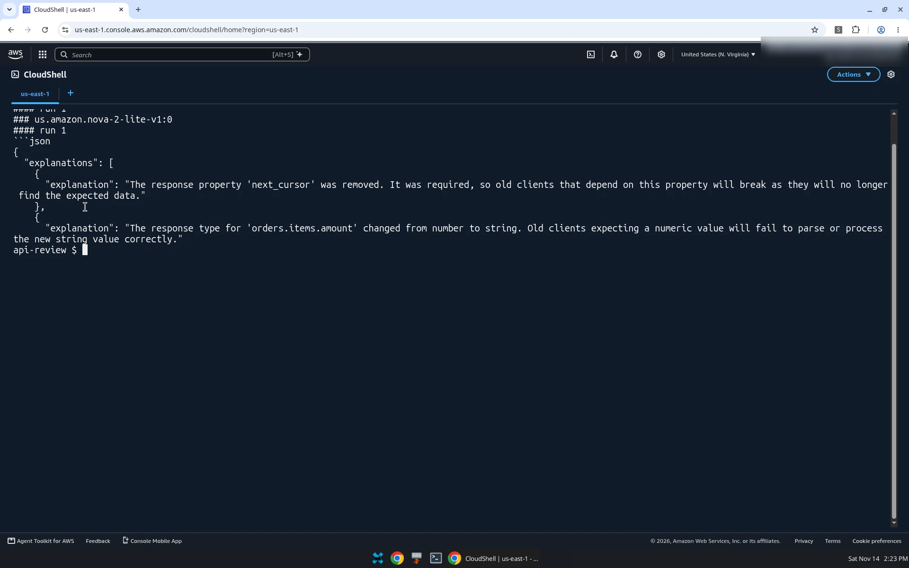
explanations array contains one object per break (next_cursor was removed and old clients will break; the type of orders.items.amount changed from number to string). It proves the model returned valid JSON wrapped in a code fence, which the original strict parser would not accept and the fixed parser does. Nothing sensitive is visible; the account menu is blurred.After the comparison I submitted the broken candidate again with Haiku 4.5 enabled. Two further problems appeared, both visible in the screenshots.
The first was a report that dropped the model text. The job showed modelStatus: parsed yet no explanations:
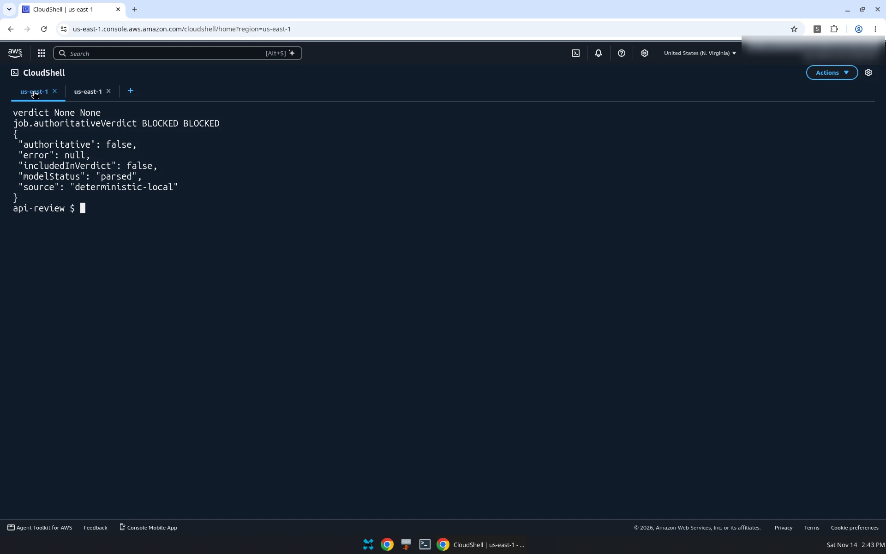
"modelStatus": "parsed", "authoritative": false, "includedInVerdict": false and "error": null, but "source": "deterministic-local" and no explanation or proposal text, even though a model reply had been parsed; the job-level authoritativeVerdict printed above it is BLOCKED BLOCKED. It proves the model text was being dropped when the report was built, not rejected. The first line, verdict None None, is part of a quick inspection printout and not a report field, and nothing sensitive is in view.The cause (commit f0e6102) was that the report shaping copied only source, modelStatus and error and dropped the parsed text, which the merge step had stored under modelExplanations and modelProposals. The fix is in report_advisory:
if status == "parsed":
return {
"authoritative": False,
"error": None,
"explanations": advisory.get("modelExplanations", []),
"includedInVerdict": False,
"modelAdvisoryHash": advisory.get("modelAdvisoryHash"),
"modelId": advisory.get("modelId") or model_id,
"modelStatus": "parsed",
"proposals": advisory.get("modelProposals", []),
"source": advisory.get("modelSource") or "bedrock-converse",
}
The second was a mistyped job id (a CloudShell typing problem, covered in troubleshooting): a job I submitted for this run answered not_found on status and report because the id I typed was not the id that had been returned (job_63b4574b6378286872e1 is the real one; the mistyped one began job_63b5474b). I fixed my workflow by never typing job ids again: scripts/aws_demo.py now saves the last submitted id to ~/.api-review-last-job and accepts --job-id last.
End-to-end result (deploy deploy8, commit f0e6102, about 2:52 PM ET). Job job_79fc043cf2b109f42aea (idempotency key cloud-broken-advisory-0004) came back BLOCKED with authoritativeVerdict BLOCKED, and an advisory with source bedrock-converse, model us.anthropic.claude-haiku-4-5-20251001-v1:0, modelStatus parsed, authoritative false, includedInVerdict false and modelAdvisoryHash abc9415047ad0838ddc40cd98a52dbd755db6e55c46ced3fee574dfb6f962f52.
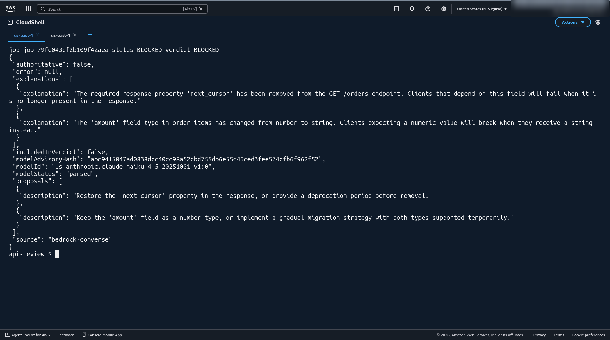
job_79fc043cf2b109f42aea: status BLOCKED, verdict BLOCKED, two explanations (the required next_cursor removed from GET /orders; amount changed from number to string), two proposals (restore next_cursor or deprecate it first; keep amount numeric or migrate gradually), "authoritative": false, "includedInVerdict": false, "modelStatus": "parsed", "modelId": "us.anthropic.claude-haiku-4-5-20251001-v1:0", "source": "bedrock-converse" and the modelAdvisoryHash. It proves the model text reaches the report while the verdict stays the deterministic BLOCKED. No account details are visible and the account menu is blurred.AgentCore is optional in this project and is enabled and validated by its own scripts. In the live run:
SPEC_CHECK_MODE=in-process (Figure 13). The workflow's own SpecCheck step ran the fixed checker inside the Lambda. The Code Interpreter was exercised by the validation script, not by the workflow.Analyze step's "bounded agent" is the in-process tool gateway in src/apireview/agent_boundary.py, a local policy mirror that permits the same three tools. It is not the Cedar evaluator.So what I can show as evidence is that the three AgentCore building blocks deploy, are policy-enforced, and behave correctly under the allow and deny cases below. What I cannot show is a Runtime-hosted agent driving the workflow.
The gateway target ReviewTools is an API Gateway target pointing at the review API's live stage, and it maps three read-style tools to routes:
read_artifacts → GET /jobs/{jobId}read_test_results → GET /jobs/{jobId}/reportrequest_spec_check → POST /jobs"toolOverrides": [
{"name": "read_artifacts", "path": "/jobs/{jobId}", "method": "GET", "description": "Read one job. Not a verdict."},
{"name": "read_test_results", "path": "/jobs/{jobId}/report", "method": "GET", "description": "Read the sealed report and harness results. Not a verdict."},
{"name": "request_spec_check", "path": "/jobs", "method": "POST", "description": "Submit a job for the fixed checker. Not a verdict."},
{"name": "approve", "path": "/reviews", "method": "POST", "description": "Review callback. Cedar default deny must block this tool."},
],
The fourth tool, approve, is registered only so that validation can prove it is denied. No permit exists for it, so Cedar's default deny blocks it, and under enforcement it does not even show up in tools/list. Two more layers sit behind that: the gateway's IAM role has an explicit IAM Deny on the review-context and reviews routes, and the review Lambda separately demands the reviewer role. The runtime is meant to be told to use the three read tools only.
Tool and action ids use the gateway's naming convention <target>___<tool> (three underscores), for example ReviewTools___read_artifacts.
cd ~/api-review && CONFIRM_AGENTCORE=yes REGION=us-east-1 bash scripts/enable_agentcore.sh 2>&1 | tee ~/agentcore-enable.log
enable does the following, in this order (from agentcore_setup.py):
ApiReviewCodeInterpreter and ApiReviewGateway. Both trust the bedrock-agentcore.amazonaws.com service principal with aws:SourceAccount and an aws:SourceArn of arn:aws:bedrock-agentcore:<region>:<ACCOUNT_ID>:*.ApiReviewChecker with networkMode: SANDBOX.ApiReviewPolicy ("Read-only tools for the API review gateway.").ApiReviewTools with authorizerType=AWS_IAM, protocolType=MCP and the policy engine attached in ENFORCE mode.ReviewTools and waits until it is ready.bedrock-agentcore:InvokeGateway on that gateway to ApiReviewDeveloper and ApiReviewReviewer.ACTIVE.build/agentcore-ids.json (used by validate and teardown).The service-role trust policy, and the gateway role's permission policy, as written in the script:
def trust_policy(account, region, source_arn):
return {"Version": "2012-10-17", "Statement": [{
"Sid": "AllowBedrockAgentCoreAssumeRole", "Effect": "Allow",
"Principal": {"Service": "bedrock-agentcore.amazonaws.com"}, "Action": "sts:AssumeRole",
"Condition": {"StringEquals": {"aws:SourceAccount": account},
"ArnLike": {"aws:SourceArn": source_arn}}}]}
# gateway role: GetPolicyEngine; AuthorizeAction + PartiallyAuthorizeActions;
# execute-api:Invoke on GET /jobs, GET /jobs/*, POST /jobs;
# explicit Deny on GET /jobs/*/review-context and POST /reviews
And the Cedar permit that the script renders for each tool. One role, one action, one gateway:
def permit_statement(gateway_arn: str, action: str, principal_id: str) -> str:
return (
"permit (\n"
" principal is AgentCore::IamEntity,\n"
f' action == AgentCore::Action::"{action}",\n'
f' resource == AgentCore::Gateway::"{gateway_arn}"\n'
")\n"
"when {\n"
f' principal.id like "{principal_id}*"\n'
"};\n"
)
with principal_id set to arn:aws:sts::<ACCOUNT_ID>:assumed-role/ApiReviewDeveloper (Cedar evaluates the role without the session name, and the trailing * also matches a session suffix). Policies are created with validationMode="FAIL_ON_ANY_FINDINGS", so a permit that Cedar validation flags does not become active.
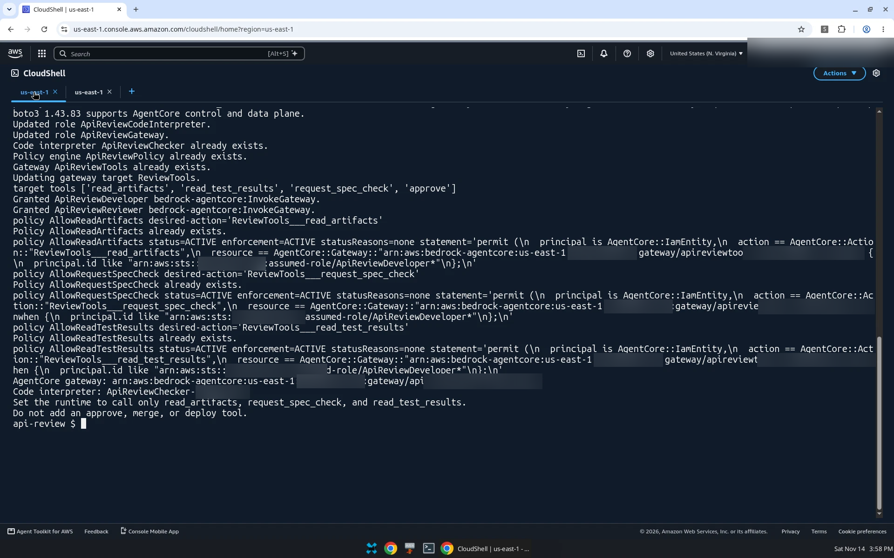
enable_agentcore.sh (the idempotent re-run that produced the final state). It reports the boto3 version check, roles ApiReviewCodeInterpreter and ApiReviewGateway updated, Code Interpreter ApiReviewChecker, policy engine ApiReviewPolicy and gateway ApiReviewTools already existing, and the target ReviewTools updated with the tools read_artifacts, read_test_results, request_spec_check and approve. It then shows bedrock-agentcore:InvokeGateway granted to ApiReviewDeveloper and ApiReviewReviewer, and the three permits AllowReadArtifacts, AllowRequestSpecCheck and AllowReadTestResults each at status=ACTIVE enforcement=ACTIVE statusReasons=none, with statements that use principal is AgentCore::IamEntity and a when clause matching …assumed-role/ApiReviewDeveloper*. It ends with the reminder to limit the runtime to the three read tools and "Do not add an approve, merge, or deploy tool." The account ID, the gateway and code-interpreter id suffixes, and the username in the ARNs are blurred.cd ~/api-review && CONFIRM_VALIDATE=yes REGION=us-east-1 bash scripts/validate_agentcore.sh 2>&1 | tee ~/agentcore-validate.log
Validate checks four things, each printed as PASS or FAIL:
gateway-read: as the api-review-developer profile (role ApiReviewDeveloper, session dev-ada), call tools/call on ReviewTools___read_artifacts for the last job id (read from ~/.api-review-last-job). It passes only on a real, non-error result.policy-deny: with the same developer identity, call ReviewTools___approve. It passes only when the response is a policy denial.other-identity: as the reviewer profile (ApiReviewReviewer, session rev-ben), call read_artifacts. It passes only when that call is denied: the Cedar permits are scoped to the developer role, so the reviewer is refused even though it has InvokeGateway.code-interpreter diff: start a Code Interpreter session on ApiReviewChecker, run the fixed checker source against the broken spec, read the output stream, and stop the session in a finally. It passes only if the checker returned ok: false and flagged both checker.amount.type and checker.next_cursor.required. In other words, PASS means the interpreter correctly caught the broken candidate.The log from the validation run (account masked as 0444XXXXXXXX):
boto3 1.43.83 supports AgentCore control and data plane.
ambient caller arn:aws:iam::0444XXXXXXXX:root
gateway caller profile api-review-developer role ApiReviewDeveloper
Gateway target ReviewTools is READY.
policy AllowReadArtifacts status=ACTIVE enforcement=ACTIVE statusReasons=none
policy AllowRequestSpecCheck status=ACTIVE enforcement=ACTIVE statusReasons=none
policy AllowReadTestResults status=ACTIVE enforcement=ACTIVE statusReasons=none
job id from /home/cloudshell-user/.api-review-last-job job_79fc043cf2b109f42aea
gateway caller arn:aws:sts::0444XXXXXXXX:assumed-role/ApiReviewDeveloper/dev-ada
tools/list -> ReviewTools___read_artifacts, ReviewTools___read_test_results, ReviewTools___request_spec_check
PASS gateway-read ReviewTools___read_artifacts
PASS policy-deny ReviewTools___approve
other caller arn:aws:sts::0444XXXXXXXX:assumed-role/ApiReviewReviewer/rev-ben
PASS other-identity ReviewTools___read_artifacts
PASS code-interpreter diff
PASS agentcore-validation
Two details matter here. First, tools/list returns only the three read tools: with the policy engine in enforcement, the gateway lists only tools that an ACTIVE permit allows, so approve is hidden from the listing as well as denied when called. Second, the "ambient caller" is the root user of CloudShell, which is not the gateway caller: all gateway calls are made through the developer and reviewer profiles.
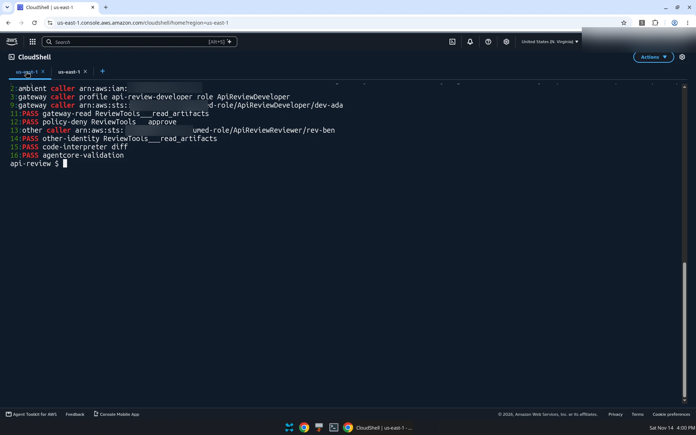
PASS gateway-read ReviewTools___read_artifacts as dev-ada, PASS policy-deny ReviewTools___approve, the other caller …assumed-role/ApiReviewReviewer/rev-ben with PASS other-identity ReviewTools___read_artifacts, PASS code-interpreter diff and PASS agentcore-validation. It proves the allow, the policy denial, the wrong-identity denial and the interpreter check in one screen. The account ID portions of the ARNs are blurred.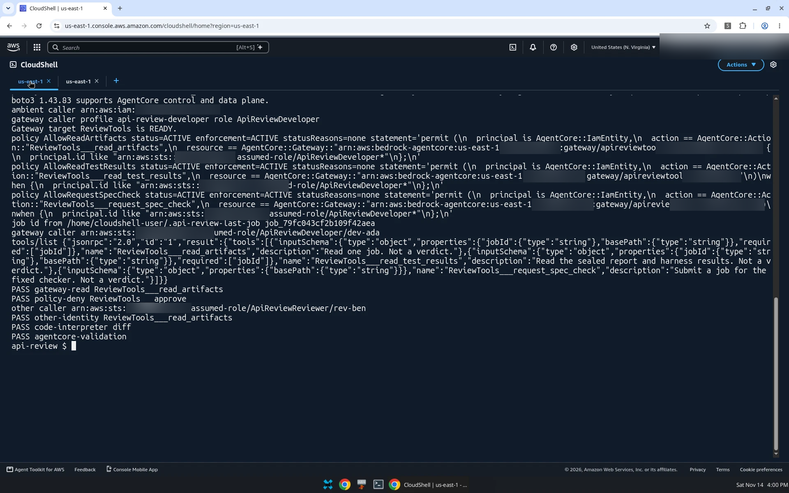
ReviewTools READY, the three ACTIVE permits with their Cedar statements, job id job_79fc043cf2b109f42aea read from ~/.api-review-last-job, the tools/list response listing only read_artifacts, read_test_results and request_spec_check (each with the description "…Not a verdict."), and then all PASS lines through PASS agentcore-validation. It shows the entire chain, from policy state to the final result, in a single capture. Account IDs and the gateway id suffix in the Cedar resource strings are blurred.The same state, from the AgentCore console:
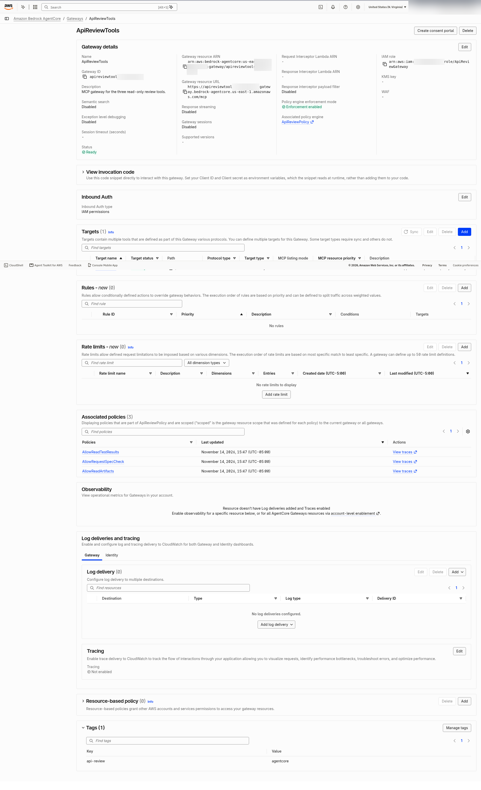
ApiReviewTools: status Ready, description "MCP gateway for the three read-only review tools", inbound auth type IAM permissions, policy engine enforcement mode Enforced with the associated policy engine ApiReviewPolicy, and the IAM role ApiReviewGateway. The Associated policies section lists AllowReadTestResults, AllowRequestSpecCheck and AllowReadArtifacts, last updated November 14, 2026 at 15:47 (UTC-05:00, which is ET). It proves the gateway is IAM-authenticated and policy-enforced in the console, not just in my script's output. The account ID, the gateway id and URL suffixes and the role ARN prefix are blurred.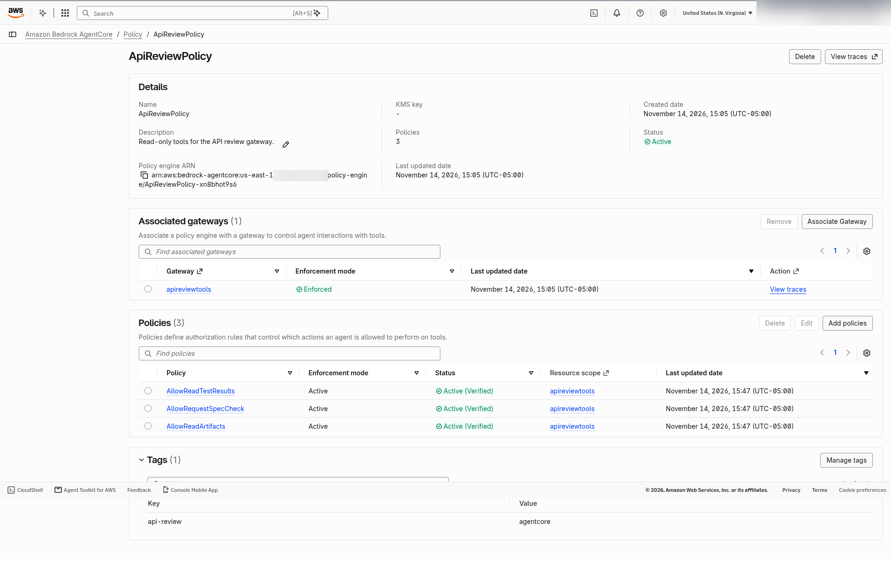
ApiReviewPolicy: description "Read-only tools for the API review gateway.", status Active, 3 policies, and the associated gateway apireviewtools with enforcement mode Enforced. The Policies table shows AllowReadTestResults, AllowRequestSpecCheck and AllowReadArtifacts, each "Active" with the status "Active (Verified)", scoped to apireviewtools. It shows the permits passed validation and are in force, and that there are exactly three. The account ID inside the policy engine ARN is blurred.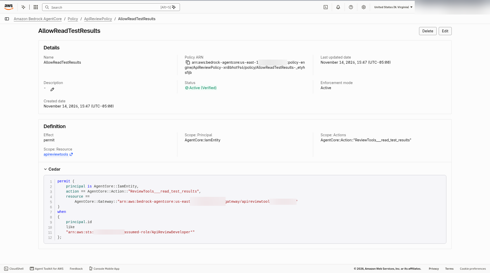
AllowReadTestResults in the console: effect permit, principal scope AgentCore::IamEntity, action AgentCore::Action::"ReviewTools___read_test_results", resource the apireviewtools gateway. The Cedar tab shows the full statement, including when { principal.id like "arn:aws:sts::<ACCOUNT_ID>:assumed-role/ApiReviewDeveloper*" }. It proves the permit is scoped to the developer role and not to every IAM caller. The account ID and the gateway id suffix are blurred.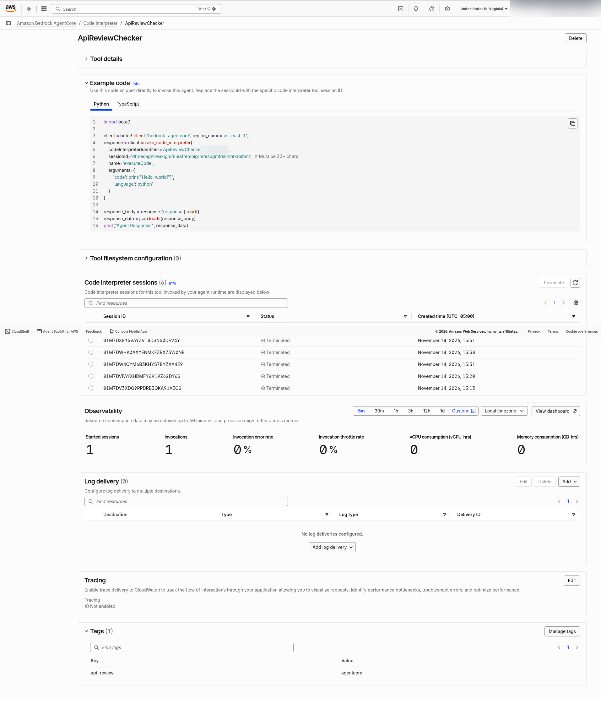
ApiReviewChecker in the console: the example invoke_code_interpreter snippet for the resource, the "Code interpreter sessions (6)" list, with the visible sessions shown as Terminated and created on November 14, 2026 between 15:13 and 15:51 (ET), and the observability panel for the selected window reading 1 started session, 1 invocation and 0% invocation error rate. The session count is consistent with the repeated validate runs while I was fixing the issues in the troubleshooting section, and every session was stopped. The account ID and the interpreter id suffix are blurred.approve denied by policy; the reviewer identity denied; the Code Interpreter flagged both breaks in the broken spec; console views of each resource.agentcore_setup.py (13 tests): name patterns, trust shape, MCP protocol negotiation, Cedar statement generation and matching, checker-stream parsing, tool/route mapping and denial classification.SPEC_CHECK_MODE=agentcore, and the Code Interpreter's observability beyond the one console view above.Everything in this section was captured from the AWS console in us-east-1 on November 14, 2026, between about 4:32 PM and 5:04 PM ET, after the stack had been deployed and used for the runs above. The account menu, account IDs inside URLs and ARNs, API ids and random resource suffixes are blurred. Each view maps to something the CloudShell walkthrough already created, so this is the same stack seen from the other side.
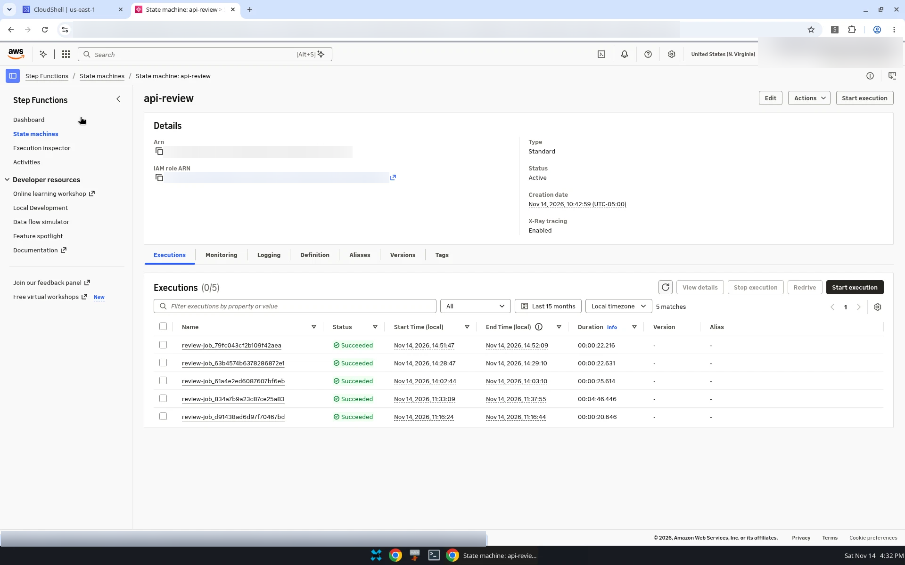
api-review: type Standard, status Active, created November 14, 2026 at 10:42:59 (UTC-05:00, which is ET), and X-Ray tracing Enabled. The Executions tab lists five executions named review-job_<jobId>, all Succeeded, from review-job_d91438ad6d97f70467bd (11:16 AM ET, 20.6 seconds) to review-job_79fc043cf2b109f42aea (2:51 PM ET, 22.2 seconds). The corrected job's execution, review-job_834a7b9a23c87ce25a83, ran for 4 minutes 46 seconds because it waited for the review, and "Succeeded" for a broken job only means the workflow reached its MarkBlocked end state, not that the candidate passed. This list was captured at 4:32 PM ET, so it does not include the later tracing test jobs. The ARNs and the browser address are blurred.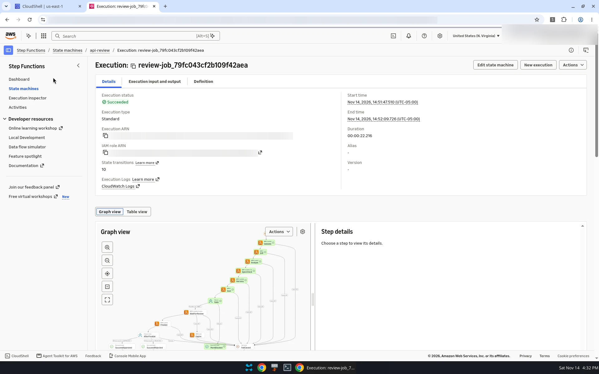
review-job_79fc043cf2b109f42aea, the broken candidate that ran with the Bedrock advisory enabled: status Succeeded, type Standard, started 14:51:47.510 and ended 14:52:09.726 (UTC-05:00), duration 00:00:22.216, 10 state transitions. The graph view under the details draws the state machine with the states that ran in green; the page is cut off at the fold, so the individual states are not readable in this capture. It shows that every job gets its own named execution that you can open and replay state by state. The execution ARN, the role ARN and the browser address are blurred.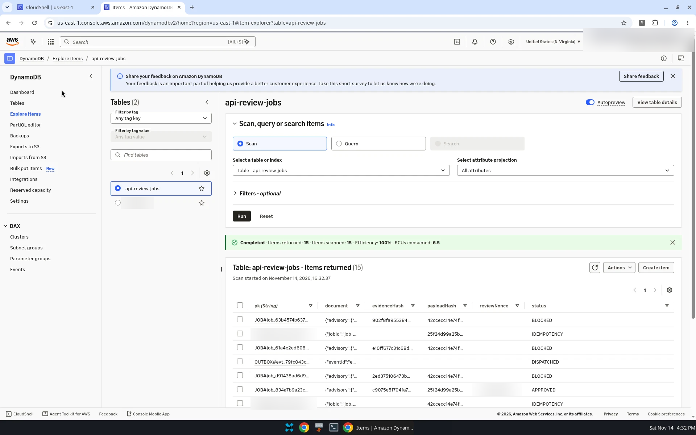
api-review-jobs: a scan that completed with 15 items returned and 15 scanned. The visible partition keys are of three kinds, JOB#job_…, IDEM#… and OUTBOX#evt_…, with the statuses BLOCKED, IDEMPOTENCY, DISPATCHED and APPROVED, which is the single-table layout from Step 7 in the real table. The reviewNonce value, the idempotency keys (they embed the caller's ARN), the name of an unrelated table in the same account and the account menu are blurred.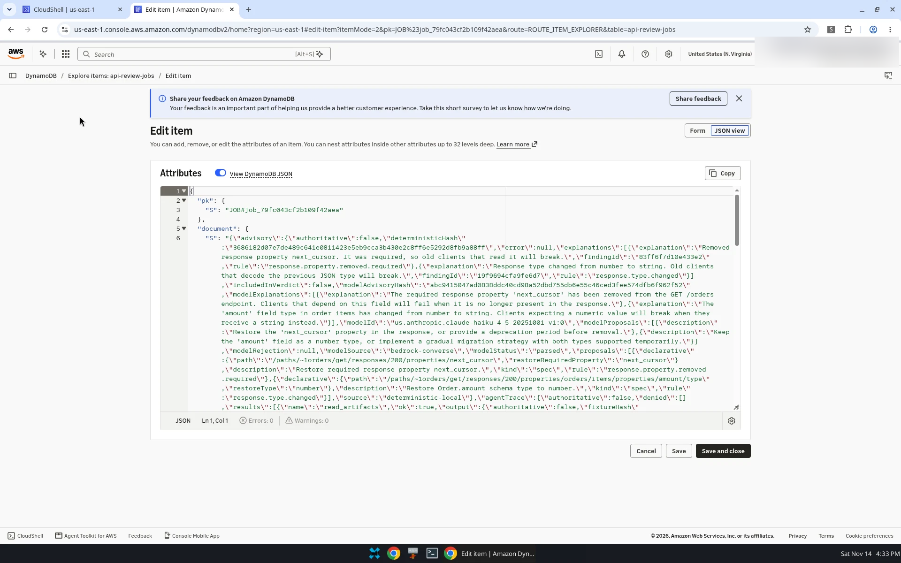
JOB#job_79fc043cf2b109f42aea opened in JSON view. The visible part of its document attribute is the advisory block: authoritative: false, a deterministicHash, explanations for the removed next_cursor and the amount type change, modelId us.anthropic.claude-haiku-4-5-20251001-v1:0, modelStatus: parsed, includedInVerdict: false and a modelAdvisoryHash; the rest of the document scrolls out of view. This is the same advisory shown in the report earlier (Figure 20), read straight from the table, and it confirms the model text is stored beside the evidence and flagged as non-authoritative. The account menu is blurred.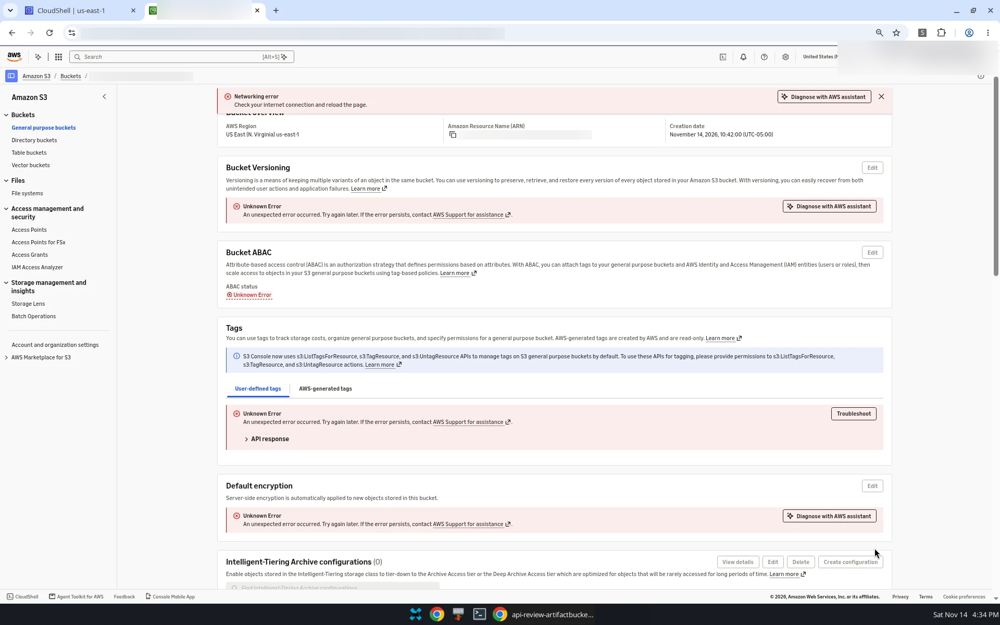
The console's Objects tab for the same bucket returned the same "Unknown Error". I noted that the bucket has no bucket policy and did not establish whether that is related, so I read the bucket from CloudShell instead. The commands are not visible in the two captures below; they are aws s3 ls listings of this form:
aws s3 ls "s3://<ArtifactBucketName>/"
aws s3 ls "s3://<ArtifactBucketName>/" --recursive
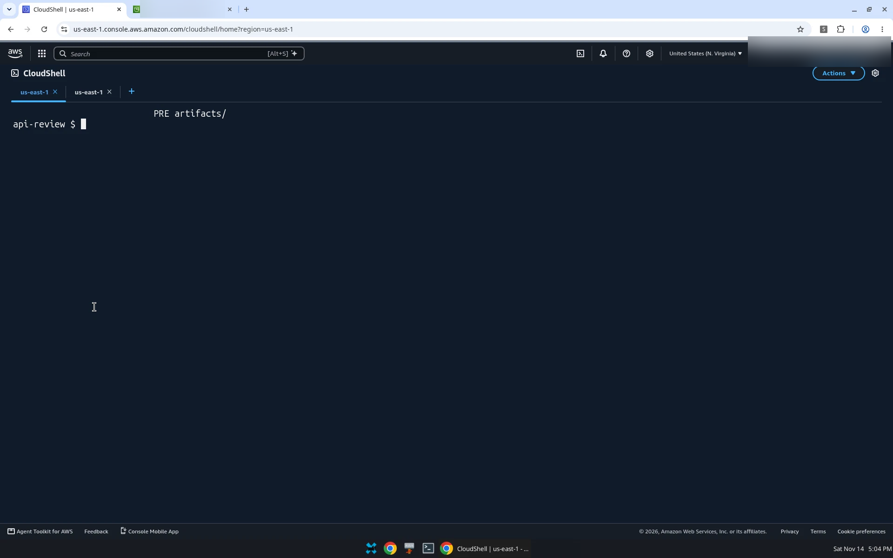
PRE artifacts/. Nothing else is stored at the top level, which matches the code, which writes each object under the key artifacts/<digest>.json. The account menu and the second browser tab's bucket name are blurred.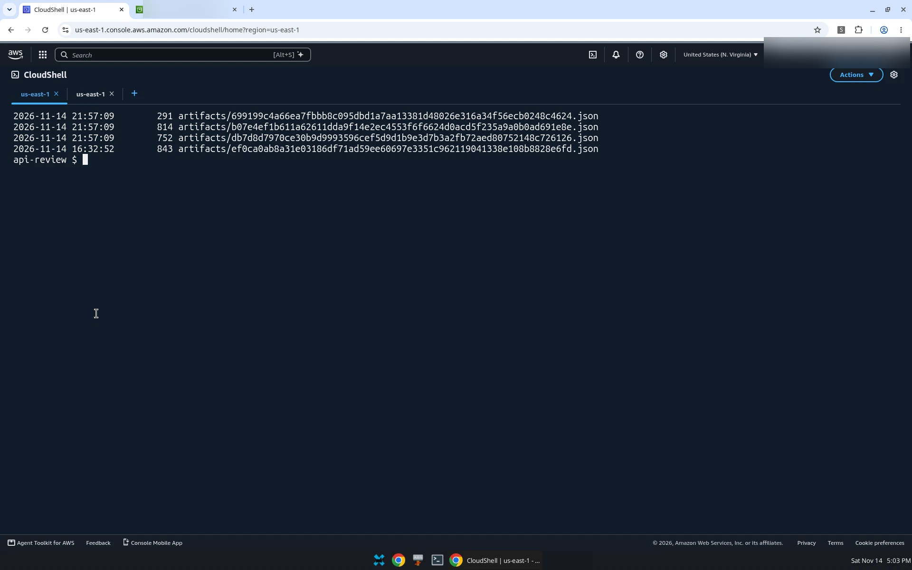
artifacts/: four JSON objects with 64-character hexadecimal names of 291, 814, 752 and 843 bytes. aws s3 ls prints UTC, so three objects were last written at 21:57:09 UTC (4:57 PM ET) and one at 16:32:52 UTC (11:32 AM ET). Only four objects after many jobs is consistent with the content-addressed keys (identical bytes are written under the same key); I did not list object versions here. The account menu and the bucket name in the browser tab are blurred.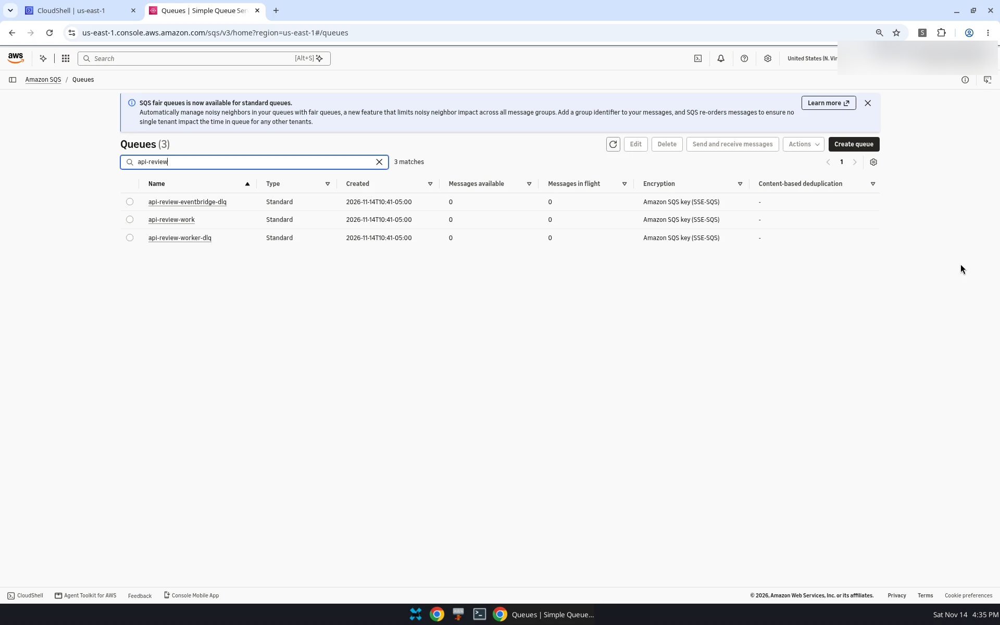
api-review: three Standard queues, api-review-eventbridge-dlq, api-review-work and api-review-worker-dlq, all created 2026-11-14T10:41 (-05:00) and encrypted with SSE-SQS. Every queue shows 0 messages available and 0 in flight at 4:35 PM ET, so the two separate dead-letter queues from Section 4 were empty after all of the jobs above. The account menu is blurred.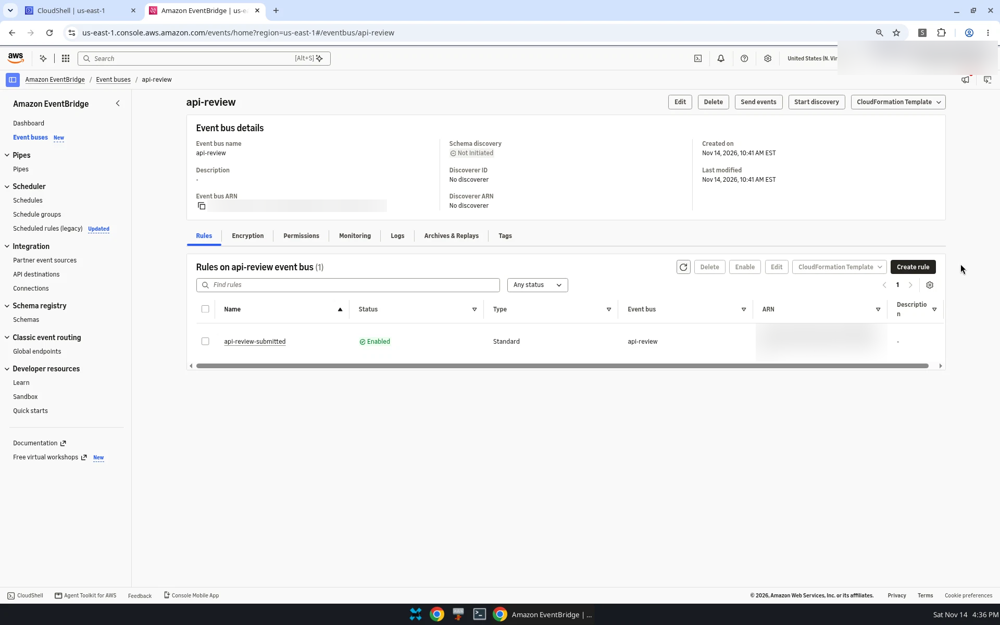
api-review (the template's logical id for it is ReviewBus): created November 14, 2026 at 10:41 AM EST, schema discovery not initiated, and exactly one rule, api-review-submitted, type Standard and Enabled. That rule is the JobSubmitted pattern that routes events to the work queue. The event bus ARN, the rule ARN and the account menu are blurred.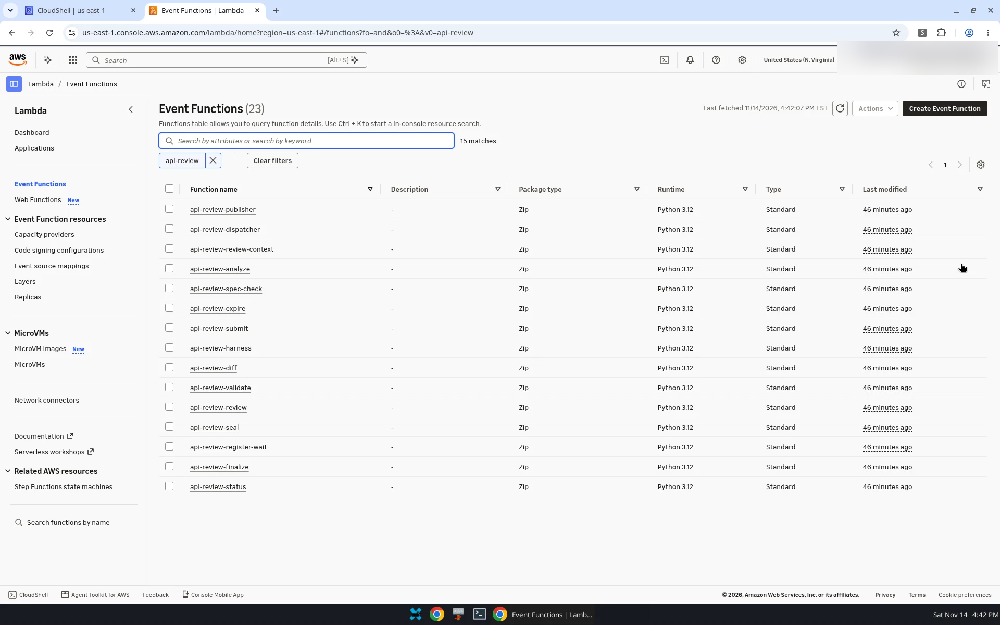
api-review: 15 matches out of 23 functions in the account, all Zip packages on Python 3.12. The names are publisher, dispatcher, review-context, analyze, spec-check, expire, submit, harness, diff, validate, review, seal, register-wait, finalize and status, which is exactly the list in Section 4. All 15 show the same "46 minutes ago" modification age (the page says it was fetched at 4:42:07 PM EST), as you would expect after one stack update. The account menu is blurred.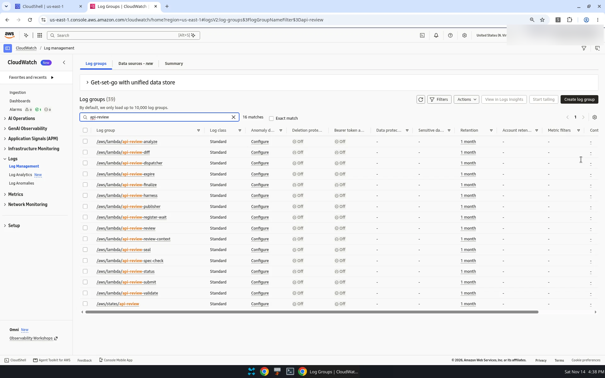
api-review: 16 matches, one /aws/lambda/api-review-<function> group for each of the 15 functions plus /aws/states/api-review for the state machine. All are Standard class with retention "1 month", which is the 30-day retention the template sets on each explicit log group. They exist because the template creates them, not because a first invocation did, and they are removed with the stack. The account has 39 log groups in total; the account menu is blurred.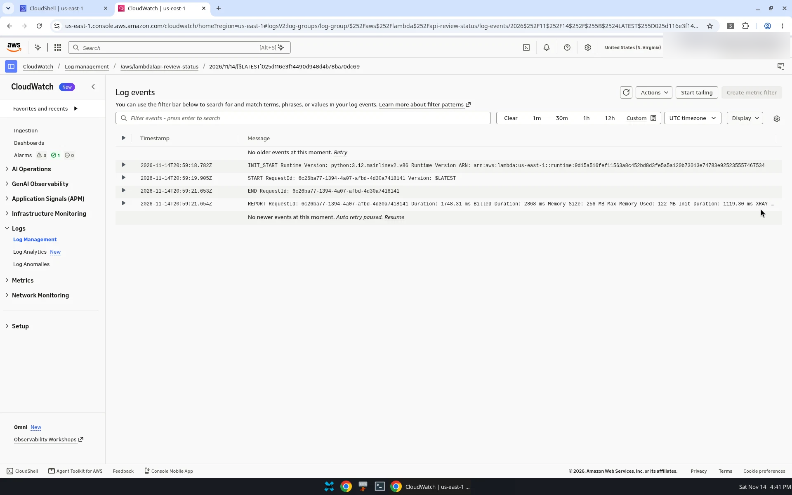
/aws/lambda/api-review-status, with the timezone set to UTC: an INIT_START line for the Python 3.12 runtime, then START, END and REPORT for one request at 2026-11-14T20:59 UTC (3:59 PM ET). The REPORT line shows Duration 1748.31 ms, Memory Size 256 MB, Max Memory Used 122 MB and Init Duration 1119.30 ms, and continues with an XRAY field that is cut off in this view. It shows the function logging to its own group and the cold-start initialization time of the OpenTelemetry-wrapped runtime. The account menu is blurred.Amazon Q Developer was never in the runtime path, and it did not write this repository's code: the code already existed when I asked these questions. On November 14, 2026 (about 4:44 to 4:46 PM ET) I used the Amazon Q Developer chat panel in the AWS console as a planning and design-review assist. I asked two general questions, with no repository attached, and compared its answers with what I had already built. The full, verbatim answers are saved in results/q_developer_answers.md; below I quote only short excerpts.
I asked: "What are best practices for detecting breaking changes between two OpenAPI specs, such as a removed response field or a field type changed from number to string?"
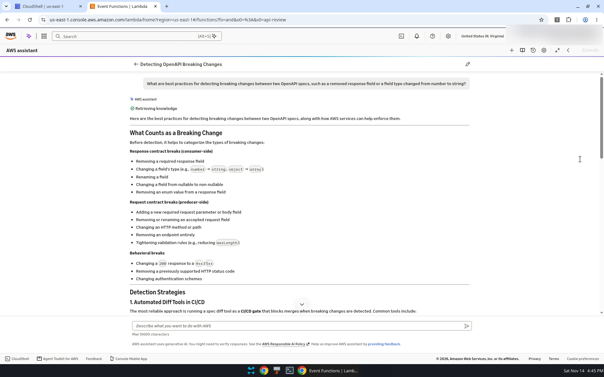
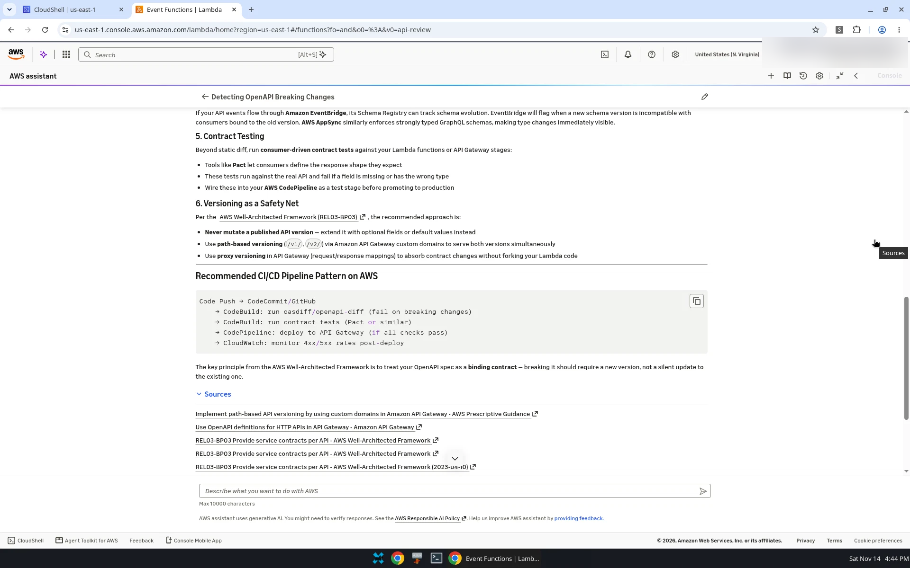
oasdiff/openapi-diff and fails on breaking changes before deploying. It closes with "treat your OpenAPI spec as a binding contract" and a list of sources. The account menu is blurred.What I took from it, using short quotes:
src/apireview/diff.py) and adds an old-client harness instead of adopting an off-the-shelf tool. I did not run oasdiff or Pact for this guide.I asked: "How should an AWS Step Functions workflow keep an LLM advisory step from changing a deterministic release verdict?"
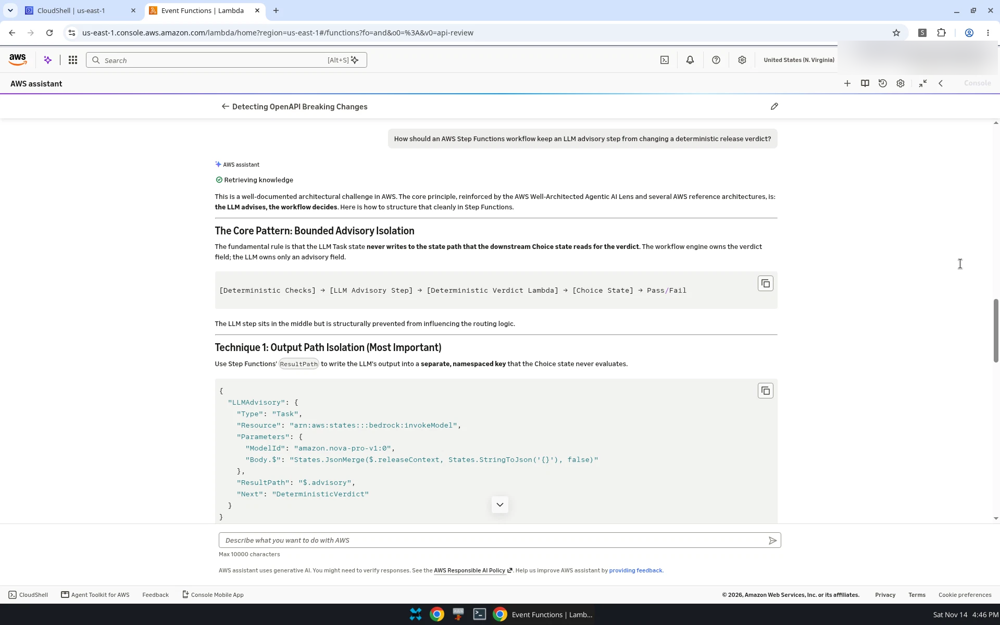
ResultPath $.advisory. The example uses a direct bedrock:invokeModel Task with the model id amazon.nova-pro-v1:0. The account menu is blurred.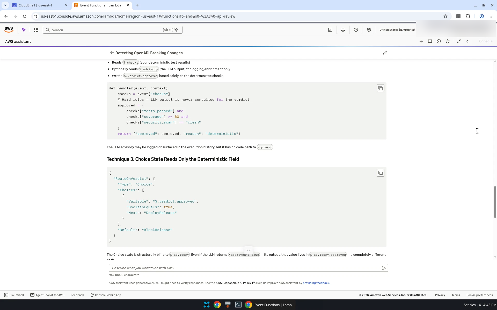
approved only from deterministic check results ("LLM output is never consulted for the verdict"), and "Technique 3: Choice State Reads Only the Deterministic Field", a Choice state that tests $.verdict.approved. The answer notes the Choice state is "structurally blind" to $.advisory. The account menu is blurred.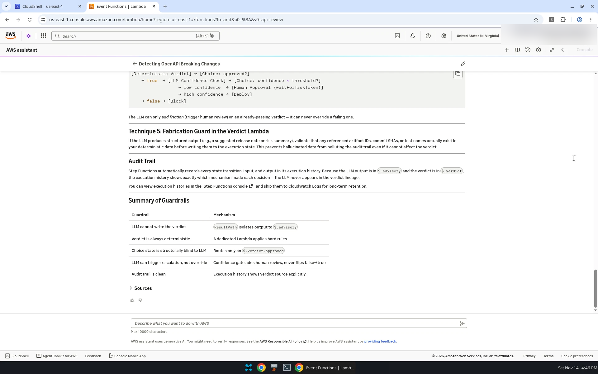
How this compares with what I built, stated carefully:
Gate Choice state tests $.verdict for the string PASS, and that value is produced by the Seal step from the deterministic findings and the harness result only. The advisory is stored with authoritative: false and includedInVerdict: false and is hashed separately.ResultPath on a direct bedrock:invokeModel Task. My state machine does not do that: every Task state returns $, and the model is called through Converse from the analyze Lambda. The isolation comes from the Lambda code and the verdict function, not from ResultPath. I did not change the workflow because of this answer.PASS regardless of any model output.Treat a Q answer as a prompt for a person to check against the code and the 72 tests, not as evidence. It does not replace the tests, and I did not use it as a code review.
Each Lambda in the stack has an explicit CloudWatch log group, TracingConfig Active, and the AWS OpenTelemetry layer. The API Gateway live stage and the Step Functions state machine have tracing turned on as well. The application code uses a small span helper (tracing.py) that records structured start and end events with the job id and optionally forwards to OpenTelemetry when it is installed. It never imports the maintenance-mode aws-xray-sdk, and a test (test_repo_does_not_import_the_xray_sdk) enforces that. The span helper strips taskToken and reviewNonce from attributes, and a test (test_task_token_is_not_logged_or_returned) checks the task token is not logged.
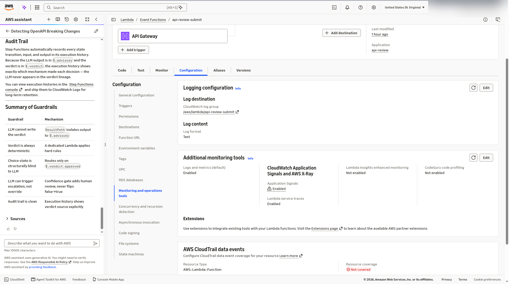
api-review-submit, Configuration tab, "Monitoring and operations tools". Logging configuration points at the log group /aws/lambda/api-review-submit with text log format, and under "Additional monitoring tools" the section "CloudWatch Application Signals and AWS X-Ray" shows "Lambda service traces" Enabled. The side panel on the left is the console's Amazon Q Developer chat panel, still showing the answer from Section 11. The account menu is blurred.After the first deploy, every function had TracingConfig Active, the layer attached and these variables: AWS_LAMBDA_EXEC_WRAPPER=/opt/otel-instrument, OTEL_PROPAGATORS=xray,tracecontext, OTEL_AWS_APPLICATION_SIGNALS_ENABLED=false and an OTEL_SERVICE_NAME per function. I submitted a broken candidate (job_d286cd77bde4a219e0f5, idempotency key cloud-broken-trace-0005), which was BLOCKED as expected. In the X-Ray Trace Map the result was "No services", and there were 0 traces. I did not keep a screenshot of that first empty map; the Trace Map capture further down was taken after the fix and looks the same.
The cause was in the environment. OTEL_AWS_APPLICATION_SIGNALS_ENABLED=false made the layer skip the AWS distro, so the spans went to the default exporter address, localhost:4318, and were dropped inside the function. The fix, in commit 37567ae, sets the distro, the configurator and the exporter explicitly, and points the exporter at the X-Ray OTLP endpoint. This is the real block from scripts/assemble_template.py, with the repository's own comment:
# The layer only selects aws_distro when Application Signals is true.
# With it false, spans default to localhost:4318 and the Trace Map stays empty.
# Export directly to the X-Ray OTLP endpoint, which Transaction Search stores in aws/spans.
"OTEL_AWS_APPLICATION_SIGNALS_ENABLED": "false",
"OTEL_EXPORTER_OTLP_PROTOCOL": "http/protobuf",
"OTEL_EXPORTER_OTLP_TRACES_ENDPOINT": {"Fn::Sub": "https://xray.${AWS::Region}.amazonaws.com/v1/traces"},
"OTEL_LOGS_EXPORTER": "none",
"OTEL_METRICS_EXPORTER": "none",
"OTEL_PROPAGATORS": "xray,tracecontext",
"OTEL_PYTHON_CONFIGURATOR": "aws_configurator",
"OTEL_PYTHON_DISTRO": "aws_distro",
"OTEL_SERVICE_NAME": {"Fn::Sub": f"${{ProjectName}}-{suffix}"},
"OTEL_TRACES_EXPORTER": "otlp",
"OTEL_TRACES_SAMPLER": "parentbased_always_on",
The template test (test_template_contracts) now asserts these values, the Active tracing mode, tracing on the API stage and the state machine, and the two X-Ray write actions in the submit role.
I redeployed from 37567ae (the log ended with Successfully created/updated stack - api-review) and submitted another broken candidate, job_e02c5e57722dec400590 (key cloud-broken-trace-0006), which was BLOCKED again.
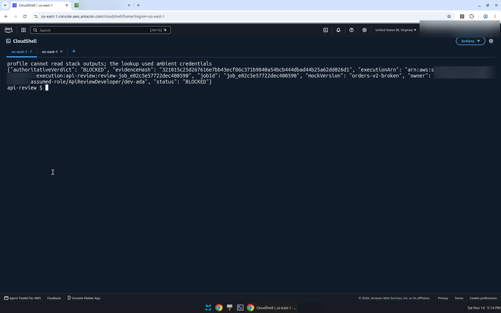
authoritativeVerdict and status both BLOCKED, mockVersion orders-v2-broken, the job id job_e02c5e57722dec400590, an evidenceHash, and an owner of …assumed-role/ApiReviewDeveloper/dev-ada. The first line is a warning the script printed to stderr: "profile cannot read stack outputs; the lookup used ambient credentials". It is not a failure: the developer profile was denied access to the stack outputs, so aws_demo.py read the endpoint from the stack with CloudShell's own credentials and still signed the API call itself as the developer role. The account ID inside the ARNs, including the part that wrapped onto the next lines, and the account menu are blurred.To look at the configuration without changing anything, I wrote scripts/check_tracing.sh. It does not submit a job. It lists each function's tracing mode and the OpenTelemetry variables, reads the API stages and the state machine, asks X-Ray for trace summaries from the last 30 minutes, and prints the X-Ray indexing rules and the trace segment destination:
aws xray get-trace-summaries --region "$REGION" --start-time "$START" --end-time "$END" --output json
aws xray get-indexing-rules --region "$REGION" --output json
aws xray get-trace-segment-destination --region "$REGION" --output json
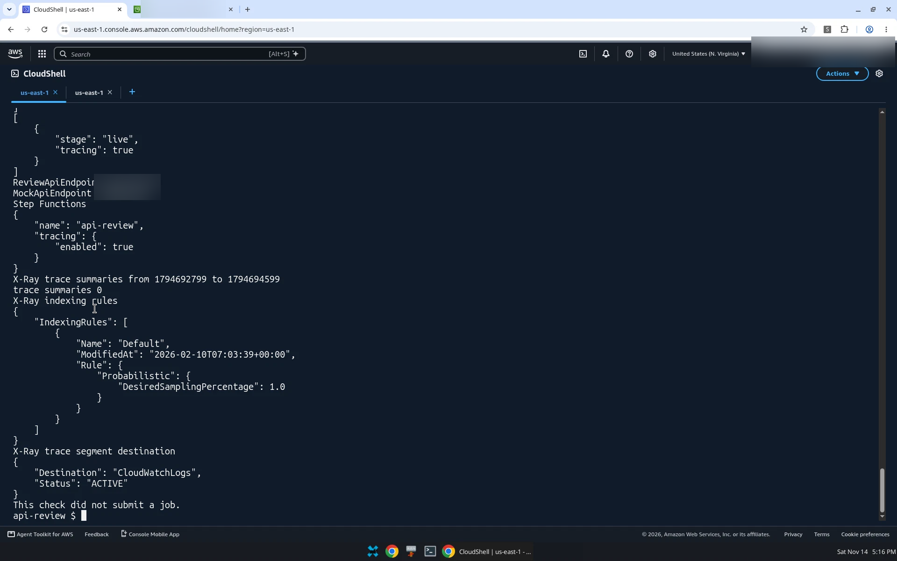
scripts/check_tracing.sh at 5:16 PM ET. The live stage reports "tracing": true for the review API (the API ids are blurred), Step Functions reports "name": "api-review" with "enabled": true, and the X-Ray trace summaries over the last 30 minutes number 0. The indexing rules show a single rule named Default that is Probabilistic with DesiredSamplingPercentage 1.0, and the trace segment destination is CloudWatchLogs with status ACTIVE. The last line confirms "This check did not submit a job." The account menu and the second tab's bucket name are blurred.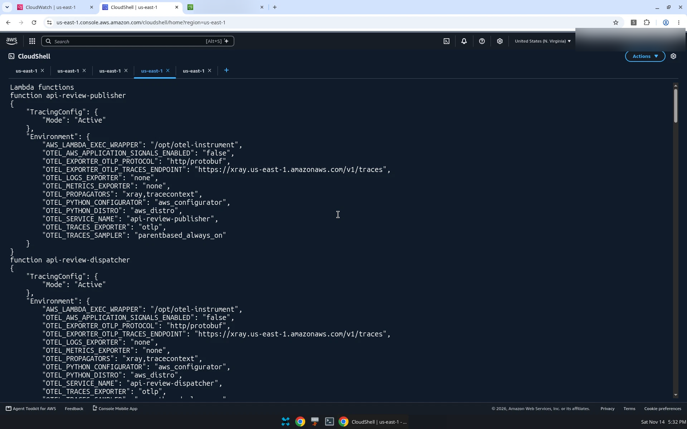
api-review-publisher and api-review-dispatcher functions: TracingConfig mode Active, AWS_LAMBDA_EXEC_WRAPPER /opt/otel-instrument, OTEL_PYTHON_DISTRO aws_distro, OTEL_PYTHON_CONFIGURATOR aws_configurator, OTEL_TRACES_EXPORTER otlp, the traces endpoint https://xray.us-east-1.amazonaws.com/v1/traces, and OTEL_SERVICE_NAME per function. The check printed the same block for every function; the capture shows these two, and I did not capture the rest of the list. The account menu is blurred.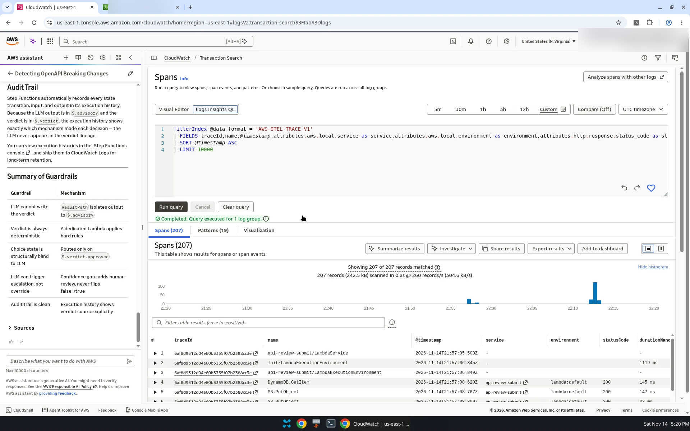
filterIndex @data_format = 'AWS-OTEL-TRACE-V1', sorted by timestamp) completed against one log group and returned 207 spans (207 records, 242.5 kB, scanned in 0.8 seconds). The histogram has a small cluster at about 21:57 UTC (4:57 PM ET) and a larger one at about 22:12 to 22:13 UTC (5:12 to 5:13 PM ET); the visible rows are spans such as api-review-submit/LambdaService, DynamoDB.GetItem and S3.PutObject. The commit for the tracing fix was made at 5:09 PM ET, and I did not capture which job each span belongs to. The side panel is the Amazon Q Developer chat panel from Section 11, and the account menu is blurred.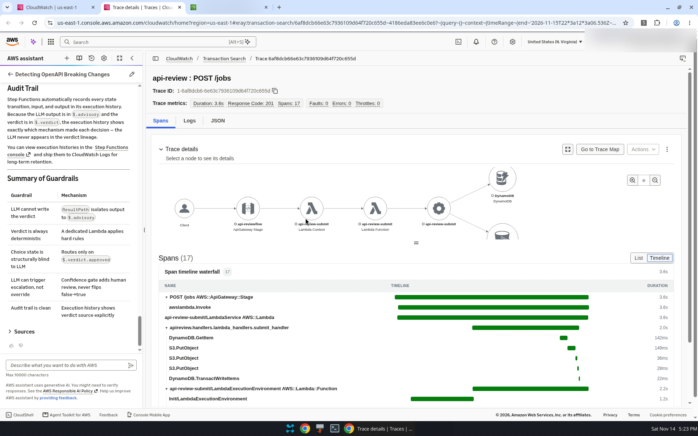
api-review-submit, the function, and on to DynamoDB, and the timeline lists POST /jobs (3.6 s), awslambda.Invoke, the handler span apireview.handlers.lambda_handlers.submit_handler (2.0 s), DynamoDB.GetItem (142 ms), three S3.PutObject calls (149 ms, 36 ms and 28 ms) and DynamoDB.TransactWriteItems (22 ms), then the Lambda execution environment with its init span. The leading hexadecimal digits of this trace's id are its start time in epoch seconds (6af8dcb6, which decodes to 22:12:06 UTC, 5:12 PM ET); that is derived from the id, not shown by the console, and it falls after the tracing commit. It shows an end-to-end request across API Gateway, Lambda, DynamoDB and S3 with no errors. The account menu is blurred./aws/spans: "0 matches" and "No log groups matched your filter". The filter was for /aws/spans, the name the repository's template comment gives for where Transaction Search stores spans, and it found nothing, while the spans in the previous figures were queryable in Transaction Search. I did not investigate further, so I make no claim about where those spans are stored or why the group is not listed. The side panel is the Amazon Q Developer chat panel from Section 11, and the account menu is blurred.Putting the observations together, without claiming more than I saw:
POST /jobs trace with no faults or errors.CloudWatchLogs (ACTIVE), so spans are stored in Transaction Search, and the indexing rule is Default probabilistic at 1.0%, so only about 1% of traces are indexed into X-Ray trace summaries and Trace Map entries. That would explain an empty map for a handful of test requests, but I did not test it (for example by raising the sampling percentage), so treat it as the explanation I find most likely, not as a verified one.localhost:4318) is a separate problem, and the commit fixed it. In my captures I did not isolate that fix from the Transaction Search setup: there are also spans at 21:57 UTC, before the commit, in the same table, and I did not investigate why.Observed live in AWS (us-east-1, November 14, 2026):
api-review, including the first failed attempt and the working deploys; redeploys with the Bedrock advisory enabled, and the redeploy from 37567ae for tracing.BLOCKED with one informational and two breaking findings; the corrected candidate PASS, WAITING_REVIEW, then APPROVED; two more broken candidates for the tracing check, both BLOCKED.9e702c8.Tested locally only (72 tests, no AWS calls): the diff direction rules, the harness, sealing, idempotency conflicts, duplicate-event and crash/reconcile handling, DLQ separation, the policy mirror, DynamoDB Decimal handling, advisory parsing and report shaping, runtime-client wiring, the AgentCore helper logic, the template contract (including the tracing variables) and the cleanup helpers (batching, pagination, a missing bucket and the report format).
Proposed or not demonstrated:
SPEC_CHECK_MODE=agentcore (Code Interpreter inside the state machine). The live workflow uses SPEC_CHECK_MODE=in-process.Every item below is something that actually went wrong in this build. Where I have the exact message from a run, I quote it. Where the only evidence is the code and the commit that fixed it, I describe the behavior the code now handles and do not invent an error string. Commit ids are in the public repository.
955fb9e). Symptom: "Templates with a size greater than 51,200 bytes must be deployed via an S3 Bucket" (Figure 4). Fix: upload through the code bucket with --s3-bucket and --s3-prefix, which the script now does. The generated template is 94,421 bytes.Payload.$$ rejected (4019058). Cause: the state machine definition is passed through Fn::Sub, which treats $ specially, so the $$.Task.Token context reference did not survive. Fix: scripts/assemble_template.py doubles the $ characters when it embeds the definition, so always regenerate the template with that script instead of pasting the JSON. The failed create left the stack in ROLLBACK_COMPLETE; that stack had to be deleted before I could redeploy.c484c18). Cause: the handlers fail closed when no AWS clients are injected, and the Lambda runtime had none wired. Fix: runtime_clients.py builds and caches the SDK clients only inside the Lambda runtime, only when needed, and never at import time.d17ae91). Cause: the zip was uploaded under one static S3 key, so CloudFormation saw no change. Fix: a content-addressed key, api-review/lambda-<first 16 hex of the zip's sha256>.zip.authorization_failed: "unsupported caller ARN shape" (711708d). Cause: I was calling as the CloudShell root user, and the handlers accept only the developer and reviewer roles. Fix: the scripted operator user and the two roles, and the three CLI profiles (Step 9).CreateRole failed with MalformedPolicyDocument: "Invalid principal" (df151ea). Cause: IAM eventual consistency: the role's trust policy named a user created seconds earlier. Fix: setup_demo_identities.sh retries up to 8 times with a 10-second wait on exactly that error.Decimal is not JSON serializable (afa8fdd). Cause: DynamoDB returns numbers as Decimal, and the evidence contains money-style values. Fix: convert to native numbers on read, and a test (test_report_serializes_decimal_evidence_and_hash_matches) proves the evidence hash still matches after the conversion.ResourceNotFoundException: Access denied. This Model is marked by provider as Legacy and you have not been actively using the model in the last 30 days. Fix: none in code; replace the model, and let the comparison script record the refusal per model.de60ed5). Symptom: run 1 parse results 0/3, 2/3 and 0/3 for Haiku, Pixtral and Nova; the live job's advisory said "model explanations or proposals were not arrays". Cause: the original parser accepted only a bare, exactly shaped JSON object, while a model can wrap it in a code fence or add prose. Fix: the parser changes described in Section 8.f0e6102). Symptom: modelStatus: parsed but no explanations on the report (Figure 19). Cause: the report builder copied only source, modelStatus and error. Fix: report_advisory now returns the parsed explanations and proposals, with source bedrock-converse.not_found on status and report for a job that existed (the real id was job_63b4574b6378286872e1; I typed job_63b5474b…). Fix: never type a job id. aws_demo.py submit saves the id to ~/.api-review-last-job, and every later command takes --job-id last. When you do need an id, take it from the output of a command, not from memory.https://us-east-1.console.aws.amazon.com/cloudshell/home?region=us-east-1; your home directory, including ~/api-review, persists. Prefix commands with clear; so you can read exactly what was typed, then check the line before pressing Enter. Do not hand-type ids: use --job-id last or a shell variable. Use short wrapper variables for long values, and check a deploy by grepping the log, grep 'Successfully created/updated stack' ~/deployN.log, rather than reading the scrollback. The repository's CloudShell checkout is ~/api-review.39b1f6e). The first version assumed two role ARNs were supplied. Fix: enable creates ApiReviewCodeInterpreter and ApiReviewGateway itself when they are not provided, and a validate command and teardown were added.82d1a52). The first names were hyphenated (api-review-checker, api-review-tools), which does not match the Code Interpreter pattern [a-zA-Z][a-zA-Z0-9_]{0,47}. Fix: ApiReviewChecker, ApiReviewTools, ApiReviewPolicy, ReviewTools and the three Allow… policy names, with a test (test_resource_names_match_documented_patterns) that matches each against the documented regex. The gateway and target names are the two that may contain hyphens; the policy engine, the policies and the Code Interpreter may not.2d80018). The validation client sent the header MCP-Protocol-Version: 2025-11-25, but the gateway I created advertises only the older 2025-03-26 (the code comment says gateways created before the later protocol versions advertise only that one). The unit-test fixture for this case is a JSON-RPC error reading Unsupported protocol version: 2025-11-25 with supported: ["2025-03-26"]. Fix: the client reads the gateway's supported versions, prefers 2025-03-26, and renegotiates from the server's error (negotiated_protocol).2d80018). A trust policy tied to one specific interpreter id does not match when the session starts. Fix: aws:SourceArn is arn:aws:bedrock-agentcore:<region>:<ACCOUNT_ID>:* with aws:SourceAccount set, which is the documented form. The code also retries session start while the role is "not assumable yet".fe96ad7). CreateGateway assumes the gateway role while validating the policy engine, and the source of that call is the policy engine, not the gateway, so a gateway-only aws:SourceArn is rejected. Fix: the same account-wide …:* source ARN for the gateway role (test_gateway_trust_stays_account_wide).fe96ad7). A re-run of enable did not reuse the gateway that already existed. Fix: list gateways (the response key is items; the gateway's id is the lowercased name plus a suffix), reuse the match, and attach the policy engine if it is missing.fe96ad7). The Code Interpreter returns an event stream, and the checker's result object contains nested objects, so taking the last { read the inside of findings. Fix: collect the text from the stream events, parse the first balanced top-level object, and require ok: false with both expected rule ids (test_checker_output_parses_the_first_object_and_expected_findings).38eb412). The first permits used an unconstrained principal. Fix: principal is AgentCore::IamEntity, so the permit matches the IAM caller type. Enable also refreshes stored policies that differ from the desired statement.9aacb84). A policy that failed validation stayed in the engine under the same name, so a re-run kept a permit that permitted nothing. Fix: enable deletes any policy that is not already the desired statement in ACTIVE, waits until the name is gone, and creates all three again with FAIL_ON_ANY_FINDINGS; the action ids are built from the target's real tool names, and statusReasons is printed as the validation report.5d5df23). With principal is AgentCore::IamEntity alone, Cedar validation flagged each permit as overly permissive (any IAM caller). Fix: the when { principal.id like "arn:aws:sts::<ACCOUNT_ID>:assumed-role/ApiReviewDeveloper*" } clause you can see in Figure 26. That is also what makes the reviewer identity fail the other-identity check.fc35e03). Two issues together. The gateway signs its call to the review API as ApiReviewGateway, not as the developer session, and the status Lambda answered 403 because the caller was not the job's owner; the gateway surfaced that as an internal error. Separately, the tool-to-route mapping had the read tools on the wrong routes. Fix: caller_may_read_job lets the gateway role read a job owned by ApiReviewDeveloper (any other caller must be the owner), the status Lambda was redeployed, and the mapping is now read_artifacts → GET /jobs/{jobId}, read_test_results → GET /jobs/{jobId}/report, request_spec_check → POST /jobs (test_tool_routes_match_the_operation_names). Validate now also prints the job id it used and the last five minutes of the relevant Lambda and gateway logs when a read fails.After these, the validation in Step 15 passed on commit fc35e03.
37567ae). Symptom: after a BLOCKED job (job_d286cd77bde4a219e0f5, key cloud-broken-trace-0005) the X-Ray Trace Map showed "No services" and there were 0 traces, although every function had TracingConfig Active. Cause: OTEL_AWS_APPLICATION_SIGNALS_ENABLED=false made the layer skip the AWS distro, so spans went to localhost:4318 and were dropped. Fix: each function now sets OTEL_PYTHON_DISTRO=aws_distro, OTEL_PYTHON_CONFIGURATOR=aws_configurator, OTEL_TRACES_EXPORTER=otlp and OTEL_EXPORTER_OTLP_TRACES_ENDPOINT=https://xray.us-east-1.amazonaws.com/v1/traces; I redeployed (Successfully created/updated stack - api-review) and added scripts/check_tracing.sh to read the configuration back. Still open: the Trace Map stayed on "No services" afterwards, while Transaction Search showed spans (Section 12).aws_demo.py reads the endpoint from the stack with CloudShell's own credentials and prints this warning to stderr. The API call itself is still signed as the developer role, which the job's owner shows (Figure 46).aws s3 ls from CloudShell (Figures 33 and 34).9e702c8). This was a risk I found by reading the script, not a failure I hit in AWS. Cause: the artifact bucket is versioned, and aws s3 rm --recursive leaves older versions and delete markers behind, which stops CloudFormation from deleting the bucket. Fix: scripts/empty_bucket_versions.py deletes every version and delete marker before the stack is deleted, and scripts/verify_cleanup.py prints a final existence check (Section 15).Status: I have not run the cleanup. The stack and the AgentCore resources described above still exist in my account as I write this. These are the commands, what they do in order, and how to verify that everything is gone. Run them when you are done with the guide. Since commit 9e702c8 the script empties every object version and delete marker before it deletes the stack, and it ends with an existence check; both were added after I found the versioning risk by reading the script, and both are covered only by unit tests (no AWS calls), not by a live run.
cd ~/api-review && CONFIRM_CLEANUP=yes REGION=us-east-1 bash scripts/cleanup_cloudshell.sh
Without CONFIRM_CLEANUP=yes the script prints a refusal and exits with status 2 and deletes nothing. REGION is required.
CLEANUP_AGENTCORE=no): runs scripts/teardown_agentcore.sh, which runs agentcore_setup.py teardown. That deletes the gateway targets and the gateway ApiReviewTools, then the policies and the policy engine ApiReviewPolicy, then the Code Interpreter ApiReviewChecker, then the roles ApiReviewCodeInterpreter and ApiReviewGateway (their inline policies first), and removes build/agentcore-ids.json. It looks resources up by those exact names (and the ids in the state file), so it does not touch other gateways, engines or interpreters.scripts/empty_bucket_versions.py lists every object version and delete marker in the artifact bucket (its name is read from the stack output ArtifactBucketName) and in the code bucket (api-review-code-<ACCOUNT_ID>-us-east-1, or $DEPLOY_BUCKET), deletes them in batches of 1,000 and follows pagination. A bucket that does not exist deletes nothing. It prints Removed N object versions and delete markers from <bucket>. for each bucket.aws cloudformation delete-stack for api-review, or $STACK_NAME) and the script waits for stack-delete-complete. That removes the REST APIs, Lambda functions and their log groups, the state machine, the queues, the EventBridge bus and rule, the DynamoDB table and the per-function IAM roles.aws s3 rb.CLEANUP_IDENTITIES=no): runs scripts/teardown_demo_identities.sh, which deletes the inline policies and then the roles ApiReviewDeveloper and ApiReviewReviewer, the access keys, inline policies and the IAM user api-review-operator, and strips the three profiles (api-review-operator, api-review-developer, api-review-reviewer) from ~/.aws/config and ~/.aws/credentials.scripts/verify_cleanup.py prints one line per resource.The core of the emptying step is small. This is the real code, trimmed to the two functions that matter:
def version_delete_batches(pages, batch_size=1000):
objects = []
for page in pages:
for key in ("Versions", "DeleteMarkers"):
for item in page.get(key) or []:
objects.append({"Key": item["Key"], "VersionId": item["VersionId"]})
return [objects[start : start + batch_size] for start in range(0, len(objects), batch_size)]
# purge_bucket(client, bucket) pages through list_object_versions (KeyMarker and
# VersionIdMarker), calls delete_objects for each batch, and returns how many
# versions and delete markers it removed. A missing bucket returns 0.
The existence check reports exists, absent or unknown for each of these: the stack api-review, the artifact bucket, the code bucket, the table api-review-jobs, the roles ApiReviewDeveloper, ApiReviewReviewer, ApiReviewCodeInterpreter and ApiReviewGateway, the user api-review-operator, the gateway ApiReviewTools, the policy engine ApiReviewPolicy and the code interpreter ApiReviewChecker. After a clean run every line should read absent. unknown means the lookup failed for a reason other than "not found" (for example, missing permissions), so check that resource in the console; the script does not guess. The four tests in tests/test_cleanup_versions.py cover the batching at 1,000, pagination and a missing bucket, the report format and the AgentCore example JSON names. None of them calls AWS.
The two flags let you keep a layer:
# remove the stack but keep the AgentCore resources
CONFIRM_CLEANUP=yes REGION=us-east-1 CLEANUP_AGENTCORE=no bash scripts/cleanup_cloudshell.sh
# remove the stack but keep the operator user and caller roles
CONFIRM_CLEANUP=yes REGION=us-east-1 CLEANUP_IDENTITIES=no bash scripts/cleanup_cloudshell.sh
You can also run each teardown on its own: CONFIRM_CLEANUP=yes REGION=us-east-1 bash scripts/teardown_agentcore.sh and CONFIRM_CLEANUP=yes bash scripts/teardown_demo_identities.sh.
One thing to know before you run it: if you keep the identities (CLEANUP_IDENTITIES=no), the inline api-review-invoke-gateway policy that enable_agentcore.sh put on ApiReviewDeveloper and ApiReviewReviewer stays on those roles, because only the identity teardown removes the roles' inline policies.
The script's own existence check covers the stack, buckets, table, IAM entities and the three AgentCore resources. These commands cover what it does not check. Each should report that the resource does not exist or return nothing.
aws sqs list-queues --region us-east-1 --queue-name-prefix api-review # no queues
aws stepfunctions list-state-machines --region us-east-1 --query "stateMachines[?name=='api-review']" # []
aws logs describe-log-groups --region us-east-1 --log-group-name-prefix /aws/lambda/api-review # none
aws logs describe-log-groups --region us-east-1 --log-group-name-prefix /aws/states/api-review # none (state machine log group)
aws events list-event-buses --region us-east-1 --name-prefix api-review # no bus named api-review
grep -c 'api-review' ~/.aws/config ~/.aws/credentials # 0 matches for the profiles
If you want to double-check the main pieces by hand as well:
aws cloudformation describe-stacks --region us-east-1 --stack-name api-review # "does not exist"
aws s3api head-bucket --bucket "api-review-code-<ACCOUNT_ID>-us-east-1" # 404 Not Found
aws s3api head-bucket --bucket "<ArtifactBucketName>" # 404 Not Found
aws dynamodb describe-table --region us-east-1 --table-name api-review-jobs # ResourceNotFoundException
api-review is not listed (or shows DELETE_COMPLETE under Deleted stacks).api-review-code- or api-review-artifactbucket.api-review-jobs. SQS: no api-review-work or api-review-…dlq queues. EventBridge: no event bus named api-review. Step Functions: no state machine api-review. CloudWatch: no /aws/lambda/api-review-* or /aws/states/api-review log groups.ApiReviewDeveloper, ApiReviewReviewer, ApiReviewGateway, ApiReviewCodeInterpreter, and no user api-review-operator.ApiReviewTools under Gateways, no ApiReviewPolicy under Policy, and no ApiReviewChecker under Code Interpreter. The AgentCore documentation describes a retention period for Code Interpreter session data, so I do not promise that every trace of past sessions disappears at once.~/api-review-*.log, ~/deploy*.log, ~/review-context.json, ~/broken-report.json, ~/.api-review-last-job and ~/api-review/build/. They hold no credentials.A breaking API change is a small diff and a large outage, and the failure mode is that the person approving it is shown the wrong evidence. This gate puts the decision where it belongs: a deterministic diff and a fixed old-client harness decide, and nothing probabilistic can overrule them. In AWS, with real roles, the broken orders candidate was BLOCKED with the exact two breaks (the removed required next_cursor and the amount number-to-string change), the corrected candidate passed and waited, a different identity approved the sealed evidence once, a replay and a blocked-job approval both failed closed, and the developer role was denied the reviewer route by IAM itself.
Bedrock adds something genuinely useful on top: plain-language explanations and proposed fixes on the report, from a model of your choice, clearly labeled as advisory, hashed separately and excluded from the verdict. The comparison runs also showed something I would not have guessed from the documentation: a good share of the models I tried were simply unavailable to my account, for lifecycle or account-setup reasons, so a comparison that records refusals is part of the design. AgentCore adds a tool boundary you can read: a Gateway that exposes three read tools, a Cedar policy that permits only the developer role to call them, an approve tool that exists only to be denied, and a Code Interpreter that runs a fixed checker and found the same two breaks.
Two smaller lessons came from the console work. First, "tracing enabled" on a function does not mean spans arrive anywhere: the first attempt had every function on Active tracing and an empty Trace Map, because one environment variable made the layer export to localhost:4318. Second, even after the fix the Trace Map stayed on "No services" while CloudWatch Transaction Search showed the spans, so I would check the span view, not only the map, before concluding that tracing is broken. Amazon Q Developer played a small, honest role: I asked it two design questions, its principle ("the LLM advises, the workflow decides") matched what I had built, and its mechanism differed from mine.
What I would still do before calling this production-ready is on the "proposed" list above: host the advisory agent in an AgentCore Runtime, run the workflow with the Code Interpreter inside it, understand why the Trace Map stays empty (the indexing rule samples 1% of traces, which I did not test), and run and verify the cleanup. I would rather publish that gap than paper over it.
The code, the scripts and the 72 tests are in the repository: https://github.com/Ajayuppu/before-you-merge-api-release-gate.
src/apireview/diff.py: response and request compatibility rulessrc/apireview/harness.py: fixed assertions and the mock URL allow-listsrc/apireview/evidence.py: sealing and the verdict functionsrc/apireview/advisory.py: Converse request, parser, merge and report shapingsrc/apireview/agent_boundary.py: local policy mirror of the three allowed toolssrc/apireview/checker.py: the fixed spec checker (also run in Code Interpreter by validate)src/apireview/identity.py: caller identity from the API Gateway request contextsrc/apireview/handlers/lambda_handlers.py: all 15 cloud handlerscloud/statemachine.asl.json and cloud/template.deploy.json: workflow and generated CloudFormationcloud/agentcore/*.cedar and *.json: reference Cedar and create requests, now using the live names (ApiReviewChecker, ApiReviewTools, AllowReadArtifacts). The Python script scripts/agentcore_setup.py remains the source of truth for names and statementsscripts/deploy_cloudshell.sh, setup_demo_identities.sh, enable_agentcore.sh, validate_agentcore.sh, compare_bedrock_models.py, aws_demo.py, cleanup_cloudshell.sh, empty_bucket_versions.py, verify_cleanup.py, check_tracing.sh, teardown_agentcore.sh, teardown_demo_identities.shfixtures/: the three orders documents, the client fixture and three mock bodies# 1. clone and test
git clone https://github.com/Ajayuppu/before-you-merge-api-release-gate ~/api-review && cd ~/api-review
pip install pytest && python3 -m pytest -q
# 2. deploy (core stack)
CONFIRM_DEPLOY=yes REGION=us-east-1 OTEL_LAYER_ARN='<current regional ADOT Python layer ARN>' bash scripts/deploy_cloudshell.sh
# 3. caller identities
CONFIRM_IDENTITIES=yes REGION=us-east-1 bash scripts/setup_demo_identities.sh
# 4. broken, corrected, review (see Steps 10 to 13 for the full commands)
python3 scripts/aws_demo.py --region us-east-1 --profile api-review-developer submit ... --idempotency-key <new key>
python3 scripts/aws_demo.py --region us-east-1 --profile api-review-reviewer review-context --job-id last
python3 scripts/aws_demo.py --region us-east-1 --profile api-review-reviewer review --job-id last --evidence-hash "$EVIDENCE_HASH" --nonce "$NONCE" --decision approve
# 5. Bedrock advisory on, and model comparison
CONFIRM_DEPLOY=yes REGION=us-east-1 OTEL_LAYER_ARN='<arn>' BEDROCK_ADVISORY=enabled BEDROCK_MODEL_ID='us.anthropic.claude-haiku-4-5-20251001-v1:0' bash scripts/deploy_cloudshell.sh
PYTHONPATH=src python3 scripts/compare_bedrock_models.py --region us-east-1 --report ~/broken-report.json --runs 3 --print-raw
# 6. AgentCore
CONFIRM_AGENTCORE=yes REGION=us-east-1 bash scripts/enable_agentcore.sh
CONFIRM_VALIDATE=yes REGION=us-east-1 bash scripts/validate_agentcore.sh
# 7. read-only tracing check (does not submit a job)
REGION=us-east-1 bash scripts/check_tracing.sh
# 8. cleanup (documented; run at the end)
CONFIRM_CLEANUP=yes REGION=us-east-1 bash scripts/cleanup_cloudshell.sh